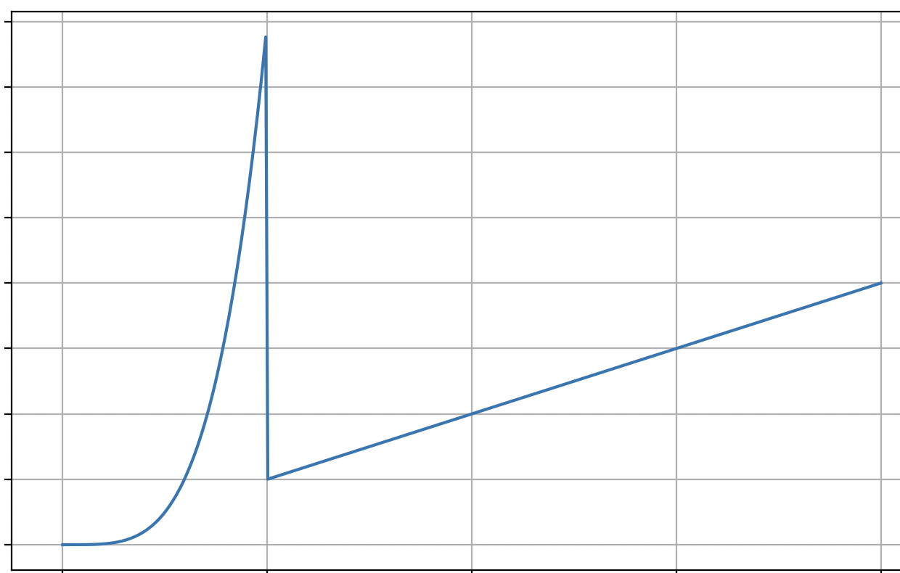
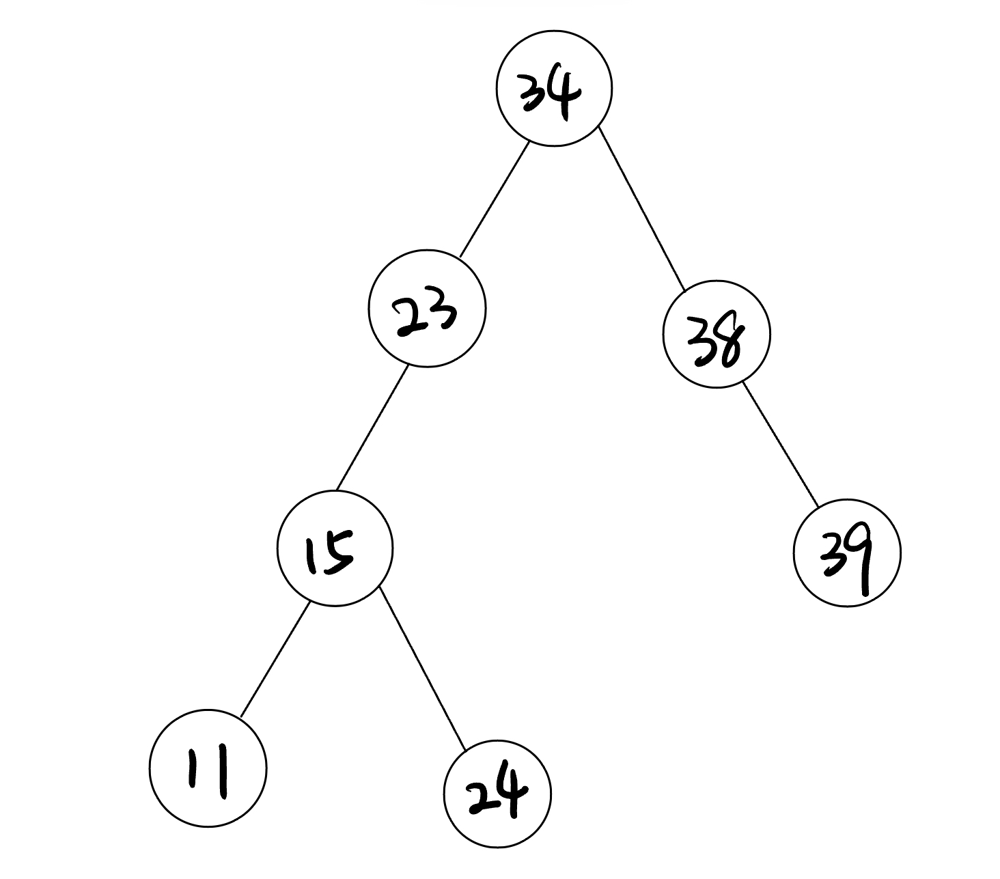
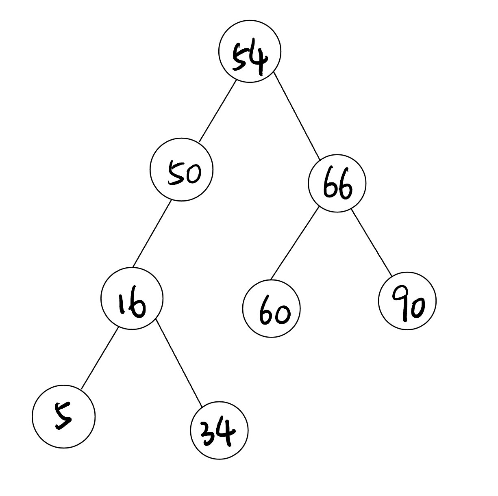
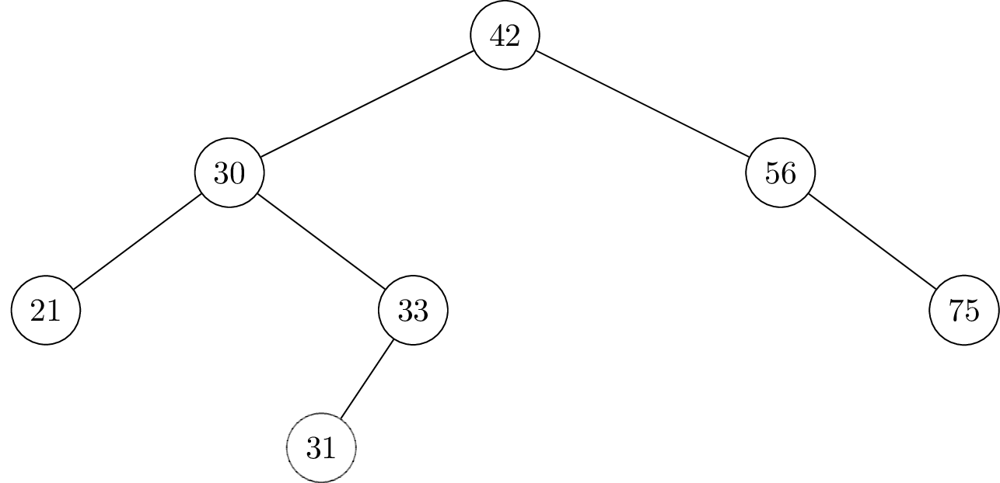

Midterm 01
Practice problems for topics on Midterm 01. See also the Sample Midterm 01 and its solutions.
Tags in this problem set:
Problem #001
Tags: lecture-01, time complexity
What is the time complexity of the following function?
def foo(arr):
"""`arr` is an array with n elements."""
x = max(arr) * min(arr)
if sum(arr) > 10:
return x
else:
return 0Solution
\(\Theta(n)\).
Each of max(arr), min(arr) and sum(arr) loops over the array once, taking \(\Theta(n)\) time. There are no loops in foo itself, so the total is \(\Theta(n) + \Theta(n) + \Theta(n) = \Theta(n)\).
Problem #002
Tags: lecture-01, time complexity
What is the time complexity of the following function?
def also_the_variance(data):
"""
computes the variance of `data`
`data` is a list of size n
"""
mu = sum(data) / len(data)
total = 0
for x in data:
total += (x - mu)**2
return total / len(data)Solution
\(\Theta(n)\).
sum(data) takes \(\Theta(n)\) time but is computed only once, before the loop. The loop runs \(n\) times and does constant work on each iteration.
Problem #003
Tags: lecture-01, time complexity
What is the time complexity of the following function?
def variance(data):
"""
computes the variance of `data`
`data` is a list of size n
"""
# compute the variance again
total = 0
for x in data:
mu = sum(data) / len(data)
total += (x - mu)**2
return total / len(data)Solution
\(\Theta(n^2)\).
sum(data) takes \(\Theta(n)\) time and is recomputed on each of the \(n\) iterations of the loop.
Problem #004
Tags: lecture-01, time complexity
What is the time complexity of the following function?
def foo(arr):
"""arr is an array of size n"""
n = len(arr)
for i in range(n):
r = sum(arr) * sum(arr)
print(r)Solution
\(\Theta(n^2)\).
Each iteration of the loop calls sum(arr) twice, and each call takes \(\Theta(n)\) time. The loop runs \(n\) times, so the total is \(\Theta(n^2)\).
Problem #005
Tags: lecture-01, time complexity
Suppose numbers is a list of integers of length \(n\). What is the time complexity of the following function in terms of \(n\)? State your answer using asymptotic notation (e.g., \(\Theta(n)\)) in the simplest terms possible.
def foo(numbers):
for x in numbers:
r = max(numbers) * min(numbers) * x
print(r)Solution
\(\Theta(n^2)\).
The loop runs \(n\) times, and on each iteration max(numbers) and min(numbers) each take \(\Theta(n)\) time. So the total is \(n \times \Theta(n) = \Theta(n^2)\).
Problem #006
Tags: lecture-01, time complexity
What is the time complexity of the following function in terms of \(n\)?
def foo(arr):
"""`arr` is a list containing n numbers."""
for x in arr:
if x > max(arr) / 2:
print('large!')
elif x < min(arr) * 2:
print('small!')
else:
print('neither!')Solution
\(\Theta(n^2)\).
The loop runs \(n\) times, and every iteration calls max(arr), which takes \(\Theta(n)\) time (and sometimes min(arr) too, which is also \(\Theta(n)\)). So each iteration takes \(\Theta(n)\) time, and the total is \(\Theta(n^2)\).
Problem #007
Tags: lecture-01, time complexity
What is the time complexity of the following function in terms of \(n\)?
def foo(arr):
"""`arr` is a list containing n numbers."""
for x in arr:
n = len(arr)
if x > sum(arr) / n:
print('large!')
elif x < sum(arr) / n:
print('small!')
else:
print('neither!')Solution
\(\Theta(n^2)\).
The loop runs \(n\) times, and every iteration computes sum(arr) at least once, which takes \(\Theta(n)\) time. (len(arr) is \(\Theta(1)\).) So the total is \(n \times \Theta(n) = \Theta(n^2)\).
Problem #008
Tags: lecture-02, time complexity
What is the time complexity of the following function? State your answer using asymptotic notation (e.g., \(\Theta(n)\)).
def foo(n):
for i in range(n):
for j in range(n):
for k in range(n**2):
print(i + j + k)Solution
\(\Theta(n^4)\).
The loops are independent, so the print runs \(n \times n \times n^2 = n^4\) times.
Problem #009
Tags: lecture-02, time complexity
What is the time complexity of the following function? State your answer using asymptotic notation (e.g., \(\Theta(n)\)).
def foo(n):
for i in range(n):
for j in range(n**2):
for k in range(n):
print(i + j + k)Solution
\(\Theta(n^4)\).
The loops are independent, so the print runs \(n \times n^2 \times n = n^4\) times.
Problem #010
Tags: lecture-02, time complexity
What is the time complexity of the following function?
def foo(n):
for i in range(n**2 - 2*n + 100):
j = 0
while j < n:
j += 1Solution
\(\Theta(n^3)\).
The outer loop runs \(n^2 - 2n + 100 = \Theta(n^2)\) times, and on each of its iterations the inner while loop runs \(n\) times, for a total of \(\Theta(n^2) \cdot \Theta(n) = \Theta(n^3)\).
Problem #011
Tags: lecture-02, time complexity
What is the time complexity of the following function?
def foo(n):
total = 0
for i in range(n**2):
for j in range(n**2 + 5*n - 100):
for k in range(n // 1_000_000):
total += i**2 + n**2
return totalSolution
\(\Theta(n^5)\).
The three loops run \(n^2\), \(n^2 + 5n - 100 = \Theta(n^2)\), and \(\lfloor n / 1{,}000{,}000 \rfloor = \Theta(n)\) times, and the loop body takes constant time, so the total is \(\Theta(n^2 \cdot n^2 \cdot n) = \Theta(n^5)\).
Problem #012 🌶️
Tags: lecture-02, time complexity
What is the time complexity of the following function?
import math
def foo(n):
for i in range(math.floor(math.sqrt(n))):
for j in range(math.floor(5*n**2 - math.sqrt(n)/1_000_000 + 100)):
print(n * n)Solution
\(\Theta(n^2 \sqrt n)\).
The outer loop runs \(\lfloor \sqrt n \rfloor = \Theta(\sqrt n)\) times. The inner loop's range doesn't depend on \(i\), and \(5n^2 - \sqrt{n}/1{,}000{,}000 + 100 = \Theta(n^2)\), since the \(n^2\) term dominates. So the total is \(\Theta(\sqrt n) \times \Theta(n^2) = \Theta(n^2 \sqrt n)\).
Problem #013
Tags: lecture-02, time complexity
Express the time complexity of the following code using asymptotic notation in the simplest terms possible.
def foo(n):
for i in range(n**3):
for j in range(n):
print(i + j)
for j in range(n**2):
print(i + j)Solution
\(\Theta(n^5)\).
The outer loop runs \(n^3\) times, and each iteration runs the two inner loops, which take \(n + n^2 = \Theta(n^2)\) time together. So the total is \(n^3 \times \Theta(n^2) = \Theta(n^5)\).
Problem #014
Tags: lecture-02, time complexity
What is the time complexity of the following function in terms of \(n\)? State your answer using asymptotic notation (e.g., \(\Theta(n)\)).
def foo(n):
for i in range(n**3):
for j in range(n):
print(i + j)
for k in range(n):
for l in range(n**2):
print(k * l)Solution
\(\Theta(n^4)\).
The two nested loops run one after the other, so we add their times. The first does \(n^3 \times n = n^4\) iterations and the second \(n \times n^2 = n^3\), so the total is \(n^4 + n^3 = \Theta(n^4)\).
Problem #015
Tags: lecture-02, time complexity
What is the time complexity of the following function in terms of \(n\)? State your answer using asymptotic notation (e.g., \(\Theta(n)\)) in the simplest terms possible.
import math
def foo(n):
for i in range(3 * n**3 + 5 * n * math.ceil(math.log(n))):
for j in range(math.floor(math.sqrt(n))):
print(i + j)
for k in range(n**2):
print(k * i)Solution
\(\Theta(n^5)\).
The outer loop runs \(3n^3 + 5n\lceil \log n \rceil = \Theta(n^3)\) times. Each iteration runs the two inner loops, which take \(\lfloor \sqrt n \rfloor + n^2 = \Theta(n^2)\) time together. So the total is \(\Theta(n^3) \times \Theta(n^2) = \Theta(n^5)\).
Problem #016
Tags: lecture-02, time complexity
What is the time complexity of the following function?
def foo(n):
while n > 1:
n /= 10
print(n)Solution
\(\Theta(\log n)\).
After \(k\) iterations, the value of n is \(n / 10^k\). The loop stops once this is at most 1, which happens after about \(\log_{10} n = \Theta(\log n)\) iterations.
Problem #017
Tags: lecture-02, time complexity
What is the time complexity of the following function? State your answer as a function of \(n\) using asymptotic notation in the simplest form possible. (e.g., \(\Theta(n)\))
import math
def boo(n):
i = n
while i > 1:
i = i / 2
for j in range(1_000_000):
print(i + j)Solution
\(\Theta(\log n)\).
Each iteration of the while loop halves \(i\), so it runs \(\Theta(\log n)\) times before \(i\) drops to 1 or below. The inner loop runs \(1{,}000{,}000\) times no matter what \(n\) is, so it's \(\Theta(1)\), and the total is \(\Theta(\log n)\).
Problem #018
Tags: lecture-02, time complexity
Express the time complexity of the following code using asymptotic notation in the simplest terms possible.
import math
def foo(arr):
"""`arr` is an array with n elements."""
n = len(arr)
ix = 1
s = 0
while ix < n:
s = s + arr[ix]
ix = ix * 5 + 2
return sSolution
\(\Theta(\log n)\).
The index ix is multiplied by 5 (plus 2) on each iteration, so after \(k\) iterations it is at least \(5^k\). The loop stops once ix reaches \(n\), which takes \(\Theta(\log_5 n) = \Theta(\log n)\) iterations, each doing constant work.
Problem #019
Tags: lecture-02, time complexity
What is the time complexity of the following function?
def foo(n):
i = 1
while i < n:
j = 0
while j < n:
j += 1
i *= 2Solution
\(\Theta(n \log n)\).
Since i doubles on each iteration, the outer loop runs \(\Theta(\log n)\) times. The inner loop runs \(n\) times on each of these, for a total of \(\Theta(n \log n)\).
Problem #020 🌶️
Tags: lecture-02, time complexity
What is the time complexity of the following function in terms of \(n\)? State your answer using asymptotic notation (e.g., \(\Theta(n)\)) in the simplest terms possible.
def foo(n):
i = 1
while i < n**3:
i = i * 2
for j in range(n):
print(i + j)Solution
\(\Theta(n\log n)\).
The while loop doubles \(i\) until it reaches \(n^3\), so it runs \(\Theta(\log n^3) = \Theta(3 \log n) = \Theta(\log n)\) times. Each iteration runs the inner loop \(n\) times, so the total is \(\Theta(n \log n)\).
Problem #021
Tags: lecture-02, time complexity
What is the time complexity of the following function in terms of \(n\)?
from math import sqrt, log, ceil
def foo(n):
for i in range(ceil(n**3 - 10*n + sqrt(n))):
for j in range(ceil(log(n**2))):
print(i, j)Solution
\(\Theta(n^3 \log n)\).
The outer loop runs \(\lceil n^3 - 10n + \sqrt n \rceil = \Theta(n^3)\) times. The inner loop runs \(\lceil \log(n^2) \rceil = \lceil 2 \log n \rceil = \Theta(\log n)\) times, so the total is \(\Theta(n^3 \log n)\).
Problem #022
Tags: lecture-02, time complexity
What is the time complexity of the following function in terms of \(n\)? State your answer using asymptotic notation (e.g., \(\Theta(n)\)).
def foo(n):
i = 0
while i < n**2:
i = i + 2
j = 0
while j < n:
for k in range(n):
print(i + j + k)
j = j + 10Solution
\(\Theta(n^4)\).
The outer loop increases \(i\) by 2 until it reaches \(n^2\), so it runs \(n^2/2\) times. The middle loop increases \(j\) by 10 until it reaches \(n\), so it runs about \(n/10\) times, and the innermost loop runs \(n\) times. The total is about \(\frac{n^2}{2} \cdot \frac{n}{10} \cdot n = \Theta(n^4)\).
Problem #023
Tags: lecture-02, time complexity
What is the time complexity of the following function in terms of \(n\)? State your answer using asymptotic notation (e.g., \(\Theta(n)\)) in the simplest terms possible.
def foo(n):
for i in range(n):
for j in range(2023):
for k in range(n - i):
print("DSC40B")Solution
\(\Theta(n^2)\).
For a fixed \(i\), the middle loop runs 2023 times (a constant) and the innermost loop runs \(n - i\) times. Summing over \(i\), the print runs \(2023 \sum_{i=0}^{n-1} (n - i) = 2023 \cdot \frac{n(n+1)}{2} = \Theta(n^2)\) times.
Problem #024
Tags: lecture-02, time complexity
Express the time complexity of the following code using asymptotic notation in the simplest terms possible.
def foo(n):
for i in range(n):
for j in range(i):
for k in range(n):
print(i + j + k)Solution
\(\Theta(n^3)\).
For a fixed \(i\), the middle loop runs \(i\) times and the innermost loop runs \(n\) times for each, so the print runs \(i \cdot n\) times. Summing over \(i\) gives \(n \sum_{i=0}^{n-1} i = n \cdot \frac{n(n-1)}{2} = \Theta(n^3)\).
Problem #025
Tags: lecture-02, time complexity
What is the time complexity of the following function?
def foo(n):
for i in range(n):
for j in range(n):
for k in range(j): # ← notice the range!
print(j)Solution
\(\Theta(n^3)\).
For a fixed i, the two inner loops run \(0 + 1 + 2 + \ldots + (n-1) = n(n-1)/2 = \Theta(n^2)\) times in total. The outer loop runs \(n\) times, so the total is \(\Theta(n^3)\).
Problem #026
Tags: lecture-02, time complexity
What is the time complexity of the following function?
def foo(n):
i = 0
while i < n:
j = 0
while j < i:
print(i + j)
j += 1
i += 5Solution
\(\Theta(n^2)\).
The outer loop takes \(i = 0, 5, 10, \ldots\), about \(n/5\) values, and for each the inner loop runs \(i\) times. Writing \(i = 5k\), the total is \(\sum_{k=0}^{n/5} 5k = 5 \cdot \Theta\bigl((n/5)^2\bigr) = \Theta(n^2)\).
Problem #027
Tags: lecture-02, time complexity
Express the time complexity of the following code using asymptotic notation in the simplest terms possible.
def foo(n):
for i in range(200, n):
for j in range(i, 2*i + n**2):
print(i + j)Solution
\(\Theta(n^3)\).
For a fixed \(i\), the inner loop runs \((2i + n^2) - i = i + n^2\) times. Since \(i < n\), this is \(\Theta(n^2)\), and the outer loop runs \(n - 200 = \Theta(n)\) times, so the total is \(\Theta(n) \times \Theta(n^2) = \Theta(n^3)\).
Problem #028
Tags: lecture-02, time complexity
What is the time complexity of the following function? State your answer as a function of \(n\) using asymptotic notation in the simplest form possible. (e.g., \(\Theta(n)\))
def boo(n):
for i in range(200, n):
for j in range(i, i * n):
print(i + j)Solution
\(\Theta(n^3)\).
If you count the number of times the inner loop body executes, you'll get something like \(n + 2n + 3n + \ldots + n\times n\). Factoring out the \(n\) and using the formula for the sum of the first \(n\) integers, we get \(n (1 + 2 + 3 + \ldots + n) = n \Theta(n^2) = \Theta(n^3)\).
Problem #029
Tags: lecture-02, time complexity
What is the time complexity of the following function in terms of \(n\)?
import math
def foo(n):
for i in range(math.floor(math.sqrt(n))):
for j in range(i):
print(i + j)Solution
\(\Theta(n)\).
The outer loop runs \(\lfloor \sqrt n \rfloor\) times, and the inner loop runs \(i\) times. So the total is \(\sum_{i=0}^{\lfloor\sqrt n\rfloor - 1} i \approx \frac{(\sqrt n)^2}{2} = \frac{n}{2} = \Theta(n)\).
Problem #030 🌶️
Tags: lecture-02, time complexity
What is the time complexity of the following function in terms of \(n\)?
def foo(n):
for i in range(n**2):
for j in range(i):
print(i+j)
for k in range(n):
print(i+k)
for x in range(n - i):
print(x)Solution
\(\Theta(n^4)\).
Each iteration of the outer loop runs three inner loops one after the other, so we can count each inner loop's total work separately and add them up. The outer loop runs for \(i = 0, 1, \ldots, n^2 - 1\).
The first inner loop runs \(i\) times, so over all iterations of the outer loop it runs \(\sum_{i=0}^{n^2-1} i = \frac{n^2(n^2-1)}{2} = \Theta(n^4)\) times. The second inner loop runs \(n\) times for each of the \(n^2\) values of \(i\), for \(\Theta(n^3)\) in total. The third is the tricky one: range(n - i) is empty once \(i \geq n\), so it only runs for the first \(n\) values of \(i\), at most \(n\) times each, for \(O(n^2)\) in total. (The outer loop itself also does \(\Theta(n^2)\) work.)
Adding these up, the total is \(\Theta(n^4) + \Theta(n^3) + O(n^2) = \Theta(n^4)\); the first inner loop dominates.
Problem #031
Tags: lecture-03, time complexity
What is the time complexity of the following function? State your answer as a function of \(n\) using asymptotic notation in the simplest form possible. (e.g., \(\Theta(n)\))
import math
def boo(n):
for i in range(n):
for j in range(n**2 + 100, 500*n**3):
for k in range(1_000, math.floor(math.log(n))):
print(i + j + k)Solution
\(\Theta(n^4 \log n)\).
The outer loop runs \(n\) times, and the middle loop runs \(500n^3 - n^2 - 100 = \Theta(n^3)\) times. The innermost loop runs \(\lfloor \log n \rfloor - 1{,}000\) times, which is zero for small \(n\) but is \(\Theta(\log n)\) for large \(n\), and asymptotic notation only cares about large \(n\). So the total is \(n \times \Theta(n^3) \times \Theta(\log n) = \Theta(n^4 \log n)\).
Problem #032
Tags: asymptotic notation, lecture-03
Let \(f(n) = 3n^2 \log n\). True or False: \(f(n) = O(n^3)\).
Solution
True.
Since \(\log n\) grows more slowly than \(n\), we have \(3n^2 \log n \leq 3n^2 \cdot n = 3n^3\) for all \(n \geq 1\), so \(f(n) = O(n^3)\). (In fact, \(f(n) = \Theta(n^2 \log n)\).)
Problem #033
Tags: asymptotic notation, lecture-03
Consider the function \(f(n) = 5n^2 - 100n + 100.\) Which of the following asymptotic bounds are true? Choose all that apply.
Solution
\(\Omega(n)\), \(\Theta(n^2)\), \(O(n^2)\), \(\Omega(n^2)\), and \(O(n^3)\).
Since \(f(n) = \Theta(n^2)\), it is \(O\) of anything that grows at least as fast as \(n^2\) and \(\Omega\) of anything that grows at most as fast as \(n^2\). It is not \(O(n)\) (and so not \(\Theta(n)\)), and it is not \(\Omega(n^3)\) (and so not \(\Theta(n^3)\)).
Problem #034
Tags: asymptotic notation, lecture-03
Let \(f(n) = \displaystyle\frac{n^3 - 2n^2 + 100}{n + 10}\)
True or False: \(f(n) = O(n^4)\)
Solution
True.
The leading term of the numerator is \(n^3\) and the leading term of the denominator is \(n\), so \(f(n) = \Theta(n^2)\). Anything that is \(\Theta(n^2)\) is also \(O(n^4)\), since \(O\) only gives an upper bound.
Problem #035
Tags: asymptotic notation, lecture-03
Consider the function defined below:
True or False: \(f(n) = \Theta(n)\).
Solution
True.
For every \(n\), \(3n \leq f(n) \leq 5n\), so \(f(n)\) is bounded above and below by constant multiples of \(n\). It doesn't matter that \(f\) jumps between two different constants.
Problem #036
Tags: asymptotic notation, lecture-03
Consider the function \(f(n) = \sin(12 n) \cdot \cos(n) + 2\). A plot of this function is shown below:

True or False: this function is \(\Theta(1)\).
Solution
True.
This function is upper bounded by 3 and lower bounded by 1 for all \(n\), and is therefore \(\Theta(1)\).
Problem #037
Tags: asymptotic notation, lecture-03
Consider the function \(f(n) = \sin(12n) \cdot \cos(n) + 2\). A plot of this function is shown below:

True or False: \(f(n) = O(n^3)\).
Solution
True.
We saw that this function is \(\Theta(1)\), but it is also correct to say that it is \(O(n^3)\), though this is not a tight upper bound.
Problem #038
Tags: asymptotic notation, lecture-04
Suppose Algorithm A takes \(\Theta(n^2)\) time, while Algorithm B takes \(\Theta(2^n)\) time. True or False: there could exist an input on which Algorithm B takes less time than Algorithm A.
Solution
True.
Asymptotic notation only describes how the time grows for large \(n\) and hides constants. For example, if A takes \(1000n^2\) steps and B takes \(2^n\) steps, then B is faster on every input of size \(n = 10\) (1024 steps vs. 100,000).
Problem #039 🌶️
Tags: asymptotic notation, lecture-04
Suppose algorithm A takes \(\Theta(n^2)\) time, while algorithm B takes \(\Theta(n^3)\) time.
True or False: there must exist an input of size 100 on which Algorithm A takes less time than Algorithm B.
Solution
False.
Algorithm A could have really large constants. For example, it could take \(1{,}000{,}000\, n^2\) seconds to run, while algorithm B takes \(0.0001\, n^3\) seconds to run. Algorithm B will still be better for \(n = 100\).
Problem #040
Tags: lecture-03, time complexity
Suppose bar and baz are two functions. Suppose bar's time complexity is \(\Theta(n^3)\), while baz's time complexity is \(\Theta(n^2)\).
Suppose boo is defined as below:
def boo(n):
if n < 1000:
bar(n)
else:
baz(n)What is the asymptotic time complexity of boo?
Solution
\(\Theta(n^2)\).
Asymptotic time complexity concerns the time taken when \(n\) is large. Therefore, it doesn't matter what happens when \(n < 1000\). When \(n \geq 1000\), the time taken is \(\Theta(n^2)\), since that is the time taken by baz.
Problem #042 🌶️
Tags: lecture-03, time complexity
Suppose bar and baz are two functions. Suppose bar's asymptotic time complexity is \(\Theta(n^4)\), while baz's is \(\Theta(n)\).
Suppose foo is defined as below:
def foo(n):
if n < 1_000_000:
bar(n)
else:
baz(n)What is the asymptotic time complexity of foo?
Solution
\(\Theta(n)\)
If you were to plot the function \(T(n)\) that gives the time taken by foo as a function of \(n\), you'd see something like the below:

This function starts off looking like \(n^4\), but at \(n = 1{,}000{,}000\), it "switches" to looking like \(n\).
Since asymptotic time complexity is concerned with the behavior of the function as \(n\) gets large, we can ignore the part where \(n\) is "small" (in this case, less than \(1{,}000{,}000\)). So, asymptotically, this function is \(\Theta(n)\).
Problem #043
Tags: lecture-03, time complexity
Suppose bar_1, bar_2 and bar_3 are three functions. Suppose bar_1's time complexity is \(\Theta(n)\), bar_2's time complexity is \(\Theta(n^2)\), and bar_3's time complexity is \(\Theta(n^3)\).
Suppose foo is defined as below:
def foo(n):
if n < 2023:
bar_1(n**3)
elif n == 2023:
bar_3(n**2)
else:
bar_2(n)What is the asymptotic time complexity of foo?
Solution
\(\Theta(n^2)\).
Asymptotic time complexity concerns the time taken when \(n\) is large. Therefore, it doesn't matter what happens when \(n \leq 2023\). When \(n > 2023\), the time taken is \(\Theta(n^2)\), since that is the time taken by bar_2.
Problem #044 🌶️
Tags: lecture-03, time complexity
Suppose bar and baz are two functions. Suppose bar's time complexity is \(\Theta(n^2)\), while baz's time complexity is \(\Theta(n)\).
Suppose foo is defined as below:
def foo(n):
# will be True if n is even, False otherwise
is_even = (n % 2) == 0
if is_even:
bar(n)
else:
baz(n)Let \(T(n)\) be the time taken by foo on an input of size \(n\). True or False: \(T(n) = \Theta(n^2)\).
Solution
False.
This function is not \(\Theta(n^2)\). For that matter, it is also not \(\Theta(n)\). It is \(O(n^2)\) and \(\Omega(n)\), though.
This function cannot be \(\Theta(n^2)\) because there are no positive constants \(c, n_0\) such that \(T(n) > c n^2\) for all \(n > n_0\). You can see this by imagining the plot of the time taken by foo as a function of \(n\). It "oscillates" between something that grows like \(n\) and something that grows like \(n^2\). If you tried to lower bound it with \(cn^2\), \(T(n)\) would eventually dip below \(cn^2\), since \(cn^2\) grows faster than \(n\).
Problem #045
Tags: asymptotic notation, lecture-03
Consider the function \(f(n) = \frac{n^8 + 2^{3 + \log n} - \sqrt n}{20 n^5 - n^2}\).
True or False: \(f(n) = O(n^{4})\).
Solution
True.
Note that \(2^{3 + \log n} = 8 \cdot 2^{\log n} = 8n\), so the dominant term in the numerator is \(n^8\), while the dominant term in the denominator is \(20n^5\). Therefore \(f(n) = \Theta(n^3)\), which is \(O(n^4)\).
Problem #046
Tags: asymptotic notation, lecture-03
Consider the function \(f(n) = \frac{n^8 + 2^{3 + \log n} - \sqrt n}{20 n^5 - n^2}\).
True or False: \(f(n) = \Omega(n^2)\).
Solution
True.
Since \(2^{3 + \log n} = 8n\), the numerator is dominated by \(n^8\) and the denominator by \(20n^5\), so \(f(n) = \Theta(n^3)\). Anything that is \(\Theta(n^3)\) is also \(\Omega(n^2)\), since \(\Omega\) only gives a lower bound.
Problem #047
Tags: asymptotic notation, lecture-03
Let
True or False: \(f(n) = \Theta(n^2)\).
Solution
False.
Keeping only the dominant terms, the first factor is \(\Theta(n^3 / \sqrt n) = \Theta(n^{2.5})\) and the second is \(\Theta(n / n^3) = \Theta(1/n^2)\). Multiplying by \(n^2\) gives \(f(n) = \Theta(n^{2.5})\), which is not \(\Theta(n^2)\) (it is not \(O(n^2)\)).
Problem #048 🌶️
Tags: asymptotic notation, lecture-03
Let
Write \(f(n)\) in asymptotic notation in the simplest terms possible.
Solution
\(f(n) = \Theta(\sqrt n \log n)\).
We simplify each piece by keeping only its dominant term. In the first fraction, the numerator \(n^3 + 10n\) is \(\Theta(n^3)\) and the denominator \(\sqrt n - 100\) is \(\Theta(\sqrt n)\). In the second fraction, \(\log(n^2 + 10) = \Theta(\log n^2) = \Theta(2 \log n) = \Theta(\log n)\), and \(n(n+1) = \Theta(n^2)\). Putting them together:
Problem #049
Tags: asymptotic notation, lecture-03
Let
Write \(f\) in asymptotic notation in the simplest terms possible.
Solution
\(f(n) = \Theta(n^2)\).
Since \(0 \leq |\sin \pi n| \leq 1\), the denominator of the middle term is between \(n + 2\) and \(n + 3\), so the middle term is \(\Theta(n^3 / n) = \Theta(n^2)\). The other terms, \(5n \log n\) and \(n\sqrt n = n^{1.5}\), grow more slowly than \(n^2\), so the middle term dominates.
Problem #050
Tags: asymptotic notation, lecture-03
Let
and define \(f(n) = f_1(n) \times f_2(n) \times f_3(n)\). What is \(f(n)\), in asymptotic notation, in simplest terms possible?
Solution
\(\Theta(n^3)\).
We simplify each factor: \(f_1(n) = \Theta(n^3 / n) = \Theta(n^2)\); \(f_2(n) = \Theta(n)\), since \(\sin(\pi n)\) is between \(-1\) and \(1\); and \(f_3(n) = \Theta(n^2/n^2) = \Theta(1)\). So \(f(n) = \Theta(n^2) \times \Theta(n) \times \Theta(1) = \Theta(n^3)\).
Problem #051
Tags: asymptotic notation, lecture-03
Let \(f(n) = n \cdot (\sin{n} + 1 )\). A plot of this function is shown below.

True or False: \(f(n) = \Theta(n)\).
Solution
False.
Remember that for \(f(n)\) to be \(\Theta(n)\), it has to be both upper- and lower-bounded by some positive constant times \(n\). This function is upper bounded by \(O(n)\), but it doesn't have a lower bound of \(\Omega(n)\). Therefore, it can't be \(\Theta(n)\).
In other words, there is no positive constant \(c\) and no positive number \(N\) such that \(f(n) > c n\) for all \(n > N\).
If you had to describe this function in asymptotic notation, you could say that \(f(n) = O(n)\) (and that would be a tight upper bound), but there is no lower bound, since the function keeps coming back down to zero.
Problem #052
Tags: asymptotic notation, lecture-03
Consider the function \(f(n) = n \times (\sin(n) + 1)\). A plot of this function is shown below:

True or False: this function is \(O(1 + \sin n)\).
Solution
False.
\(f(n)\) grows arbitrarily large, while \(\sin n + 1\) is bounded above by 2.
More formally, there is no constant \(c\) such that \(c (1 + \sin n)\) upper bounds \(f(n)\) for all large \(n\).
Problem #053
Tags: asymptotic notation, lecture-03
Consider the function \(f(n) = n \times ( \sin (n) + 1)\). A plot of this function is shown below:

True or False: \(f(n) = O(n^3)\).
Solution
True.
Since \(\sin(n) + 1\) is always between 0 and 2, we have \(0 \leq f(n) \leq 2n\), so \(f(n) = O(n)\) and therefore also \(O(n^3)\). (The oscillation only prevents \(f\) from being \(\Omega(n)\); it doesn't affect the upper bound.)
Problem #054
Tags: asymptotic notation, lecture-03
Let \(f\) be the piecewise function defined as:
If you were to plot \(f\), the function would look like \(n^2\), but would have point discontinuities where it “jumps” back to 1 whenever \(n\) is a multiple of 1 million.
True or False: \(f(n) = \Theta(n^2)\).
Solution
False.
\(f(n)\) is upper bounded by \(O(n^2)\), but it doesn't have a lower bound of \(\Omega(n^2)\), which is necessary for it to be \(\Theta(n^2)\).
To see why, remember that for \(f(n)\) to be \(\Omega(n^2)\), there must be a positive constant \(c\) so that \(f(n)\) stays above \(c\cdot n^2\) for all \(n\) greater than some \(n_0\), meaning that it goes above \(c n^2\) and it stays above \(c n^2\) forever, after some point.
Pick whatever positive \(c\) you'd like—the function \(c\cdot n^2\) grows larger and larger as \(n\) increases, and eventually becomes larger than 1. But the function \(f(n)\) keeps dipping down to 1, meaning that it doesn't stay above \(c\cdot n^2\) for all \(n\) when \(n\) is large. Therefore, \(f(n)\) is not \(\Omega(n^2)\), and therefore also not \(\Theta(n^2)\).
Problem #055
Tags: lecture-03, time complexity
What is the time complexity of the following function?
def foo(n):
for i in range(n):
for j in range(i**2): # <-- notice the bound!
print(i + j)Solution
\(\Theta(n^3)\).
The inner loop runs \(i^2\) times, so the total number of iterations is \(0^2 + 1^2 + \ldots + (n-1)^2 = \frac{(n-1)n(2n-1)}{6} = \Theta(n^3)\).
Problem #056
Tags: lecture-03, time complexity
What is the time complexity of the following function? State your answer as a function of \(n\) using asymptotic notation in the simplest form possible. (e.g., \(\Theta(n)\))
import math
def boo(n):
for i in range(n):
for j in range(n):
print(i + j)
for i in range(math.floor(math.sqrt(n))):
for j in range(math.floor(math.log2(i + 1)), i * math.floor(math.log2(i + 10))):
print(i + j)Solution
\(\Theta(n^2)\).
The second loop looks complicated to analyze, but we can effectively ignore it. This is because the most i can ever be is \(\sqrt
n\), so each iteration of the outer loop makes \(O(\sqrt n \log n)\) iterations of the inner loop. There are \(O(\sqrt n)\) iterations of the outer loop, so the second loop takes \(O(n \log n)\) time in total. Since the first loop takes \(\Theta(n^2)\), it will dominate the time complexity, and we do not need to worry about the time taken by the second loop.
Problem #057
Tags: asymptotic notation, lecture-03
Let \(f(n) = n^{ \frac{1}{\log_2(n)} } \times n.\) Give a tight asymptotic bound on \(f\) using \(\Theta\) notation, in the simplest form possible.
Hint: you might want to review your log properties. One useful one may be \(\log_b c = 1 / \log_c b\).
Solution
\(\Theta(n)\).
Using \(\frac{1}{\log_2 n} = \log_n 2\), we get \(n^{1/\log_2 n} = n^{\log_n 2} = 2\). So \(f(n) = 2n = \Theta(n)\).
Problem #058
Tags: asymptotic notation, lecture-03
Let \(f(n) = 12 \log_2(3^{(n^2 - 2n)} + 2^{(\log n)} - 10n^2 - \log_3 n).\) Give a tight asymptotic bound on \(f\) using \(\Theta\) notation, in the simplest form possible.
Solution
\(\Theta(n^2)\).
Inside the logarithm, the term \(3^{(n^2 - 2n)}\) dominates the others (which grow at most like \(n^2\)), so for large \(n\) the argument is between \(\frac{1}{2} \cdot 3^{(n^2 - 2n)}\) and \(2 \cdot 3^{(n^2 - 2n)}\). Taking \(\log_2\), \(f(n)\) is within a constant of \(12 (n^2 - 2n) \log_2 3\), which is \(\Theta(n^2)\).
Problem #059
Tags: asymptotic notation, lecture-03
Suppose \(f_1(n)\) is \(O(n^2)\) and \(\Omega(n)\). Also suppose that \(f_2(n) = \Theta(n^2)\).
Consider the function \(f(n) = f_1(n) + f_2(n)\). True or false: it must be the case that \(f(n) = \Theta(n^2)\).
Solution
True.
The upper bound: both \(f_1\) and \(f_2\) are \(O(n^2)\), so their sum is \(O(n^2)\). The lower bound: \(f_1\) is nonnegative (for large \(n\)), so \(f_1(n) + f_2(n) \geq f_2(n)\), which is \(\Omega(n^2)\).
Problem #060
Tags: asymptotic notation, lecture-03
Suppose \(f(n)\) is both \(O(n^2)\) and \(\Omega(n)\), and suppose \(g(n) = \Theta(n^3)\). What are the tightest possible asymptotic bounds that can be placed on \(f + g\)?
If the upper and lower bounds are the same, you may use \(\Theta\). If the upper and lower bounds are different, you should state them separately using \(O\) and \(\Omega\).
Solution
\(\Theta(n^3)\).
Since \(f\) is \(O(n^2)\), it grows more slowly than \(g = \Theta(n^3)\), so \(g\) dominates the sum: \(f + g \leq c n^2 + c' n^3 = O(n^3)\). And since \(f\) is positive, \(f + g \geq g = \Omega(n^3)\).
Problem #061
Tags: asymptotic notation, lecture-03
Suppose \(f(n)\) is both \(O(n^2)\) and \(\Omega(n)\), and suppose \(g(n) = \Theta(n^3)\). What are the tightest possible asymptotic bounds that can be placed on the product, \(f \times g\)?
If the upper and lower bounds are the same, you may use \(\Theta\); otherwise you should use \(O\) and \(\Omega\).
Solution
\(O(n^5)\) and \(\Omega(n^4)\).
Multiplying the bounds, \(f \times g\) is at most about \(n^2 \cdot n^3 = n^5\) and at least about \(n \cdot n^3 = n^4\). Both bounds are tight, since \(f\) could be exactly \(n^2\) or exactly \(n\), so we can't use \(\Theta\).
Problem #062
Tags: asymptotic notation, lecture-03
Suppose \(f_1(n)\) is \(O(n^3)\) and \(\Omega(n)\). Also suppose that \(f_2(n) = O(n^2)\) and \(\Omega(\sqrt n)\).
Consider the function \(f(n) = f_1(n) + f_2(n)\). True or false: it must be the case that \(f(n) = \Omega(n)\).
Solution
True.
Both functions are nonnegative (for large \(n\)), so \(f_1(n) + f_2(n) \geq f_1(n)\), and \(f_1(n) = \Omega(n)\). Adding a nonnegative function can only make the sum bigger, so it can't hurt a lower bound.
Problem #063 🌶️
Tags: asymptotic notation, lecture-03
Suppose that \(f_1(n)\) is \(O(n^3)\) and \(\Omega(n)\). Also suppose that \(f_2(n) = O(n^2)\) and \(\Omega(\sqrt n)\).
Consider the function \(g(n) = f_2(n) / f_1(n)\). Give the tightest possible upper bound on \(g(n)\).
Solution
\(O(n)\).
To find an upper bound on a fraction, we want the largest the numerator can be and the smallest the denominator can be. Since \(f_2(n) = O(n^2)\), the numerator is at most \(c_2 n^2\) for large \(n\). Since \(f_1(n) = \Omega(n)\), the denominator is at least \(c_1 n\). So
which means \(g(n) = O(n)\). Notice that the upper bound on \(g\) uses the lower bound on \(f_1\); the \(O(n^3)\) bound on \(f_1\) and the \(\Omega(\sqrt n)\) bound on \(f_2\) don't matter here.
This bound is the tightest possible, since \(f_2(n)\) could be exactly \(n^2\) and \(f_1(n)\) could be exactly \(n\), in which case \(g(n) = n\), which isn't \(O(n^{c})\) for any \(c < 1\).
Problem #064
Tags: asymptotic notation, lecture-03
Suppose \(f_1(n)\) is \(O(n^3)\) and \(\Omega(n^2)\). Also suppose that \(f_2(n)\) is \(O(n^4)\) and \(\Omega(n)\).
Consider the function \(f(n) = f_1(n) + f_2(n)\). True or false: it must be the case that \(f(n) = \Omega(n^2)\).
Solution
True.
Both functions are nonnegative (for large \(n\)), so \(f_1(n) + f_2(n) \geq f_1(n)\), and \(f_1(n) = \Omega(n^2)\). The weaker lower bound on \(f_2\) doesn't matter, since adding \(f_2\) can only make the sum larger.
Problem #065
Tags: asymptotic notation, lecture-03
Suppose that \(f_1(n)\) is \(O(n^3)\) and \(\Omega(n^2)\). Also suppose that \(f_2(n)\) is \(O(n^4)\) and \(\Omega(n)\).
Consider the function \(g(n) = f_2(n) / f_1(n)\). Give the tightest possible upper bound on \(g(n)\).
Solution
\(O(n^2)\).
\(g\) is largest when the numerator is as large as possible and the denominator as small as possible: \(f_2(n) \leq c n^4\) and \(f_1(n) \geq c' n^2\), so \(g(n) \leq \frac{c\, n^4}{c'\, n^2} = O(n^2)\). This is tight, since \(f_2\) could be exactly \(n^4\) and \(f_1\) exactly \(n^2\).
Problem #066
Tags: asymptotic notation, lecture-03
True or False. If \(f = \Omega(n^5)\) and \(f = O(n^7)\) then \(f\) must be either \(\Theta(n^5)\), or \(\Theta(n^6)\), or \(\Theta(n^7)\).
Solution
False.
Counterexample: \(f = n^{6.5}\). This is neither \(\Theta(n^5)\) nor \(\Theta(n^6)\) nor \(\Theta(n^7)\); it is \(\Theta(n^{6.5})\).
Problem #067
Tags: asymptotic notation, lecture-03
Suppose \(f_1(n) = O(g_1(n))\) and \(f_2(n) = \Omega(g_2(n))\). True or False: it is necessarily the case that \(f_1 + f_2 = O(g_1(n))\).
Solution
False.
We know nothing about how large \(f_2\) can be, so it can dominate the sum. For example, take \(f_1(n) = g_1(n) = g_2(n) = 1\) and \(f_2(n) = n^2\). Then \(f_2 = \Omega(1)\), but \(f_1(n) + f_2(n) = 1 + n^2\) is not \(O(1)\).
Problem #068 🌶️
Tags: asymptotic notation, lecture-03
Suppose \(f(n) = \Omega(n^3)\) and \(g(n) = \Omega(n)\).
True or False: it is necessarily the case that \(f/g = \Omega(n^2)\).
Solution
False.
Take \(f(n) = n^3\) and \(g(n) = n^3\). We can see from definition that \(f(n) = \Omega(n^3)\) and \(g(n) = \Omega(n)\). However,
The key takeaway for this question is, since \(g\) is in the denominator, we can make it grow arbitrarily fast, so that \(f/g\) does not meet the requirements that we want.
Problem #069
Tags: asymptotic notation, lecture-03
Suppose \(f_1(n)\) is \(O(n^2)\) and \(\Omega(n)\). Also suppose that \(f_2(n) = \Theta(n^2)\).
Consider the function \(g(n) = f_2(n) / f_1(n)\). True or false: it must be the case that \(g(n) = \Omega(n)\).
Solution
False.
\(f_1\) could be as large as \(n^2\). For example, if \(f_1(n) = f_2(n) = n^2\), then \(g(n) = 1\), which is not \(\Omega(n)\). (We only know \(g(n) = \Omega(1)\) and \(g(n) = O(n)\).)
Problem #070
Tags: asymptotic notation, lecture-03
True or False. If \(f_1 = \Theta(g_1(n))\) and \(f_2 = O(g_2(n))\) then \(\frac{f_1}{f_2} = \Theta(g_1 / g_2)\).
Solution
False.
Try breaking it with a counterexample. What if \(f_1 = n^3\), \(f_2 = n^2\), \(g_1 = n^3\) and \(g_2 = n^3\)? All of the conditions are satisfied, but \(f_1/f_2 = n\), while \(g_1/g_2 = 1\), so \(f_1 / f_2\) is not \(\Theta(g_1/g_2)\).
Problem #071
Tags: asymptotic notation, lecture-03
Suppose \(f_1(n) = O(g_1(n))\) and \(f_2(n) = O(g_2(n))\). Define \(f(n) = \min \{ f_1(n), f_2(n) \}\) and \(g(n) = \min \{ g_1(n), g_2(n) \}\). True or false: it is necessarily the case that \(f(n) = O(g(n))\).
Solution
True.
For large \(n\), \(f_1(n) \leq c_1 g_1(n)\) and \(f_2(n) \leq c_2 g_2(n)\). The minimum of \(f_1\) and \(f_2\) is at most each of them, so with \(c = \max\{c_1, c_2\}\) we get \(\min\{f_1(n), f_2(n)\} \leq c \, g_1(n)\) and \(\leq c \, g_2(n)\), i.e., \(f(n) \leq c \min\{g_1(n), g_2(n)\}\).
Problem #072
Tags: asymptotic notation, lecture-03
Suppose \(f_1(n) = \Omega(g_1(n))\) and \(f_2(n) = \Omega(g_2(n))\). Define \(f(n) = \min \{ f_1(n), f_2(n) \}\) and \(g(n) = \min \{ g_1(n), g_2(n)\}\).
True or false: it is necessarily the case that \(f(n) = \Omega(g(n))\).
Solution
True.
For large \(n\), \(f_1(n) \geq c_1 g_1(n)\) and \(f_2(n) \geq c_2 g_2(n)\). Letting \(c = \min\{c_1, c_2\}\), whichever of \(f_1(n)\) or \(f_2(n)\) is smaller is still at least \(c\) times the corresponding \(g\), which is at least \(c \min\{g_1(n), g_2(n)\}\). So \(f(n) \geq c \, g(n)\).
Problem #073 🌶️
Tags: asymptotic notation, lecture-03
Suppose \(f_1(n) = \Omega(g_1(n))\) and \(f_2(n) = \Omega(g_2(n))\). Define \(f(n) = \max \{ f_1(n), f_2(n) \}\) and \(g(n) = \max \{ g_1(n), g_2(n)\}\).
True or false: it is necessarily the case that \(f(n) = \Omega(g(n))\). In other words, it must be the case that \( \max \{ f_1(n), f_2(n) \} = \Omega ( \max\{ g_1(n), g_2(n) \} ). \)
Solution
True.
For large \(n\), \(f_1(n) \geq c_1 g_1(n)\) and \(f_2(n) \geq c_2 g_2(n)\). Letting \(c = \min\{c_1, c_2\}\), \(\max\{f_1(n), f_2(n)\}\) is at least both \(c\, g_1(n)\) and \(c\, g_2(n)\), so it is at least \(c \max\{g_1(n), g_2(n)\}\).
Problem #074
Tags: lecture-04, theoretical lower bounds
What is a tight theoretical lower bound for the problem of finding a mode of a collection of \(n\) numbers?
Solution
\(\Theta(n)\).
In the worst case, all numbers are distinct and we must loop through all of them to discover this, taking linear time.
Problem #075
Tags: lecture-04, theoretical lower bounds
Suppose you are given a (possibly unsorted) array containing \(n\) elements. Each element is either zero or one. You are tasked with determining if the majority (at least half) of the array's elements are one.
What is the tight theoretical lower bound for the worst case time complexity of this problem?
Solution
\(\Theta(n)\).
Any algorithm must read every element in the worst case: if it skips one, that element could be the one that tips the count of ones over half (or keeps it under), so the algorithm can't know the answer. So the lower bound is \(\Omega(n)\), and it's tight because counting the ones in a single pass takes \(\Theta(n)\) time.
Problem #076
Tags: best and worst case, lecture-04
What is the best case time complexity of the following code?
def insertion_sort(arr):
"""Sort `arr` in ascending order."""
n = len(arr)
for i in range(1, n):
x = arr[i]
j = i - 1
# find where to place x
while j >= 0 and x < arr[j]:
arr[j+1] = arr[j]
j -= 1
arr[j+1] = xSolution
\(\Theta(n)\).
The best case occurs when the array is already sorted. Notice that in this case, the while loop will never actually execute.
Problem #077
Tags: best and worst case, lecture-04
What is the worst case time complexity of the following code?
def insertion_sort(arr):
"""Sort `arr` in ascending order."""
n = len(arr)
for i in range(1, n):
x = arr[i]
j = i - 1
# find where to place x
while j >= 0 and x < arr[j]:
arr[j+1] = arr[j]
j -= 1
arr[j+1] = xSolution
\(\Theta(n^2)\).
The worst case occurs when the array is sorted in reverse order. In this case, the while-loop executes on every iteration of the for-loop, and must move x from its current position all the way to the beginning of the array.
Problem #078
Tags: best and worst case, lecture-04
What is the best case time complexity of the following function?
def foo(arr):
"""arr is an array of size n"""
for x in arr:
for y in arr:
if sum([x,y]) == 5:
return sum(arr)
return FalseSolution
\(\Theta(n)\).
In the best case, we return sum(arr) on the very first iteration.
Problem #079
Tags: best and worst case, lecture-04
What is the worst case time complexity of the following function?
def foo(arr):
"""arr is an array of size n"""
for x in arr:
for y in arr:
if sum([x,y]) == 5:
return sum(arr)
return FalseSolution
\(\Theta(n^2)\).
In the worst case, we never find x + y == 5, and go through all \(\Theta(n^2)\) iterations just to return False at the end.
Problem #080
Tags: best and worst case, lecture-04
What is the best case time complexity of the following function in terms of \(n\)?
def foo(arr):
"""`arr` is a list containing n numbers."""
previous = None
n = len(arr)
for x in arr:
if x == previous:
for i in range(n**2):
print('Equal!')
return
previous = xSolution
\(\Theta(n)\).
In the best case, no two adjacent elements are equal (e.g., all elements are distinct), so the \(n^2\) loop never runs and the function does constant work for each of the \(n\) elements. Any input with two equal adjacent elements runs the \(n^2\) loop, so it's slower.
Problem #082 🌶️
Tags: best and worst case, lecture-04
What is the worst case time complexity of the following function in terms of \(n\)?
def foo(arr):
"""`arr` is a list containing n numbers."""
previous = None
n = len(arr)
for x in arr:
if x == previous:
for i in range(n**2):
print('Equal!')
return
previous = xSolution
\(\Theta(n^2)\).
There are two kinds of inputs. If no two adjacent elements are equal, the loop goes through all \(n\) elements doing constant work on each, and the function takes \(\Theta(n)\) time. Otherwise, suppose the first pair of equal adjacent elements ends at index \(k\). The loop runs \(k + 1 \leq n\) times, then the inner loop prints \(n^2\) times and the function returns, for a total of \(\Theta(k + n^2) = \Theta(n^2)\), since \(k < n\).
So the worst case is any input with two equal adjacent elements, e.g., an array whose elements are all equal, and it takes \(\Theta(n^2)\) time. Note that the function returns right after the \(n^2\) loop, so it can only run once; that's why the worst case isn't \(\Theta(n^3)\).
Problem #083 🌶️
Tags: lecture-04, theoretical lower bounds
Suppose you are given a (possibly unsorted) array of \(n\) floating point numbers and are tasked with counting the number of elements in the array which are within ten of the array's maximum (you are not told the maximum). That is, you must count the number of elements \(x\) such that \(m - x \leq 10\), where \(m\) is the array's maximum. You may assume that the array does not contain duplicate numbers.
What is the tight theoretical lower bound for the worst case time complexity of this problem?
Solution
\(\Theta(n)\).
It takes \(\Theta(n)\) time to find the maximum. After this, we loop through and keep track of how many elements are within ten of the maximum—this also takes \(\Theta(n)\) time.
Problem #084
Tags: best and worst case, lecture-04
The below code takes in an array of numbers and returns the index of the first maximum. What is this code's best case time complexity?
def index_of_maximum(arr):
"""`arr` is an array with n elements."""
for i, x in enumerate(arr):
if x == max(arr):
return iSolution
\(\Theta(n)\).
In the best case, the maximum is the first element. Then the loop returns on its first iteration, after calling max(arr) once, which takes \(\Theta(n)\) time.
Problem #085
Tags: best and worst case, lecture-04
The below code takes in an array of numbers and returns the index of the first maximum.
def foo(arr):
"""`arr` is an array with n elements."""
for i, x in enumerate(arr):
if x == max(arr):
return iWhat is the worst case time complexity of the function?
Solution
\(\Theta(n^2)\).
In the worst case, the maximum is the last element (and appears only once), so the loop runs \(n\) times. Each iteration calls max(arr), which takes \(\Theta(n)\) time, so the total is \(n \times \Theta(n) = \Theta(n^2)\).
Problem #086
Tags: best and worst case, lecture-04
The code below takes in an array of \(n\) numbers and checks whether there is a pair of numbers in the array which, when added together, equal the maximum element of the array.
What is the best case time complexity of this code as a function of \(n\)? State your answer using asymptotic notation.
def exists_pair_summing_to_max(arr):
n = len(arr)
maximum = max(arr)
for i in range(n):
for j in range(i + 1, n):
if arr[i] + arr[j] == maximum:
return True
return FalseSolution
\(\Theta(n)\).
Computing max(arr) always takes \(\Theta(n)\) time. In the best case, the first pair checked works, i.e., arr[0] + arr[1] equals the maximum (e.g., [1, 1, 2, 0, 0]), so the nested loops return after \(\Theta(1)\) time and the total is \(\Theta(n)\).
Problem #087
Tags: expected time, lecture-04
What is the expected time complexity of the following function?
import random
def foo(n):
# randomly draw a number from 0, 1, 2, ..., n-1
x = random.randint(0, n-1)
if x == 1:
for i in range(n):
print(i)
else:
print("lucky!")
for i in range(n):
print(i)Solution
\(\Theta(n)\).
The last loop always runs \(n\) times. With probability \(1/n\) we have x == 1, and the first loop also runs, taking \(\Theta(n)\) time; otherwise we do constant work before the last loop. So the expected time is \(\frac{1}{n} \cdot \Theta(n) + \Theta(1) + \Theta(n) = \Theta(n)\). (In fact, every case takes \(\Theta(n)\) time.)
Problem #088
Tags: expected time, lecture-04, time complexity
What is the expected time complexity of the following function? State your answer using asymptotic notation.
import random
def boo(n):
# draw a number uniformly at random from 0, 1, 2, ..., n-1 in Theta(1)
x = random.randrange(n)
for i in range(x): # <-- note that the range is random!
print(i)Solution
\(\Theta(n)\).
The loop runs \(x\) times, and \(x\) is equally likely to be any of \(0, 1, \ldots, n-1\). So the expected number of iterations is \(\frac{1}{n}\sum_{x=0}^{n-1} x = \frac{1}{n} \cdot \frac{n(n-1)}{2} = \frac{n-1}{2} = \Theta(n)\).
Problem #089
Tags: expected time, lecture-04
What is the expected time complexity of the function below?
import random
def foo(n):
# draw a random number uniformly from 0, 1, 2, ..., 99
# in constant time
x = random.randrange(100)
for i in range(x):
for j in range(n):
print("Here!")Solution
\(\Theta(n)\).
Note that in this question, the range of \(x\) is between 0 and 99. Therefore the outer loop will run a constant number of times no matter what \(x\) is. Then we can focus on the inner loop, which calls print \(n\) times, taking \(\Theta(n)\) time. Therefore, the expected time complexity for this piece of code is \(\Theta(n)\).
Problem #090
Tags: lecture-04, sorted structure, theoretical lower bounds
Suppose you are given a sorted array containing \(n\) elements. Each element is either zero or one. You are tasked with determining if the majority (at least half) of the array's elements are one. What is the tight theoretical lower bound for the worst case time complexity of any algorithm which solves this problem?
Solution
\(\Theta(1)\).
Since the array is sorted, the zeros come first and the ones are at the end. At least half the elements are ones exactly when the element at index \(\lfloor n/2 \rfloor\) is a one, so we only need to check that one element.
Problem #091
Tags: best and worst case, lecture-04
The code below takes in two lists, each containing \(n\) integers, and determines if any number in the second list appears at least \(n/2\) times in the first list.
def boo(first_list, second_list):
"""first_list and second_list are both of size n"""
n = len(first_list)
for x in second_list:
count = 0
for y in first_list:
if x == y:
count += 1
if count >= n // 2:
return True
return FalsePart 1)
What is the best case time complexity of this code as a function of \(n\)? State your answer using asymptotic notation.
Solution
\(\Theta(n)\).
The best case is when the first element of the second list appears at least \(n/2\) times in the first list. In this case, the code will return True after iterating \(n/2\) times through the inner loop, taking \(\Theta(n)\) time total.
Part 2)
What is the worst case time complexity of this code as a function of \(n\)? State your answer using asymptotic notation.
Solution
\(\Theta(n^2)\).
In the worst case, there is no element in the second list that appears \(n/2\) times in the first. We make all \(n\) iterations of the outer loop, and during each of the outer iterations, make \(n\) iterations of the inner loop, for a total of \(\Theta(n^2)\) time.
Problem #092 🌶️
Tags: best and worst case, lecture-04
The code below takes in two lists, each containing \(n\) integers.
def are_lists_equal(list1, list2):
if len(list1) != len(list2):
return False
for i in range(len(list1)):
if list1[i] != list2[i]:
return False
return True
def foo(list1, list2):
if are_lists_equal(list1, list2):
for i in list1:
print(i)
else:
for i in list1:
for j in list2:
for k in range(len(list1)):
print(i, j, k)What is the best case time complexity of foo as a function of \(n\)? State your answer using asymptotic notation.
Solution
\(\Theta(n)\).
The best case is where the lists are equal. In this case the time complexity is \(\Theta(n)\). The worst case is when the lists are not equal in which case the time complexity is \(\Theta(n^3)\).
Problem #093
Tags: expected time, lecture-04
What is the expected time complexity of the function below?
import random
def foo(n):
# draw a random number uniformly from 0, 1, 2, ..., n-1
# in constant time
x = random.randrange(n)
for i in range(x):
for j in range(n):
print("Here!")Solution
\(\Theta(n^2)\).
The inner loop is not random, and the time complexity of it is always \(\Theta(n)\). Therefore the expected time complexity of this function will be (using the arithmetic sequence sum formula)
Problem #094
Tags: expected time, lecture-04
What is the expected time complexity of the following function?
import random
def foo(n):
for i in range(n):
# draw a number uniformly at random from 0, 1, 2, ..., n-1 in Theta(1)
x = random.randrange(n)
for j in range(x):
print(j)Solution
\(\Theta(n^2)\).
For this function, the outer loop will execute \(n\) times no matter what, hence we only have to find what the expected time complexity for the inner loop is, then combine that together with the outer loop. For the inner loop, the expected time complexity is
Then, the expected complexity for the whole function will be
Problem #095
Tags: expected time, lecture-04
What is the expected time complexity of the function below?
import random
def foo(n):
# draw a number uniformly at random from 0, 1, 2, ..., n-1
# in constant time
x = random.randrange(n)
if x < 100:
for j in range(n**2):
print(j)Solution
\(\Theta(n)\).
The for loop is only executed if \(x\) is less than 100, therefore we can write the expected time as (ignoring constant factors):
Problem #096
Tags: expected time, lecture-04
What is the expected time complexity of the following function? State your answer using asymptotic notation.
import random
def foo(n):
x = random.randrange(n)
if x < 8:
for j in range(n**3):
print(j)
else:
for j in range(n):
print(j)Solution
\(\Theta(n^2)\).
The expected time complexity for this function is
Problem #097
Tags: expected time, lecture-04, time complexity
What is the expected time complexity of the function below? State your answer using asymptotic notation.
import random
def foo(n):
# draw a number uniformly at random from 0, 1, 2, ..., n-1 in Theta(1) time
x = random.randrange(n)
if x < 20:
for i in range(n**3):
print("Very unlucky!")
elif x < n / 2:
for i in range(n):
print("Unlucky!")
else:
print("Lucky!")Solution
\(\Theta(n^2)\).
The first branch happens with probability \(20/n\) and takes \(\Theta(n^3)\) time; the second happens with probability about \(1/2\) and takes \(\Theta(n)\) time; the third takes \(\Theta(1)\) time. So the expected time is about \(\frac{20}{n} \cdot n^3 + \frac12 \cdot n + \frac12 \cdot 1 = 20n^2 + \frac{n}{2} + \frac12 = \Theta(n^2)\).
Problem #098 🌶️
Tags: expected time, lecture-04
What is the expected time complexity of the function below?
import math
import random
def foo(n):
# draw a number uniformly at random from 0, 1, 2, ..., n-1 in Theta(1)
x = random.randrange(n)
if x < math.sqrt(n):
for j in range(n):
print(j)Solution
\(\Theta(\sqrt n)\).
Since the for loop only executes when \(x\) is less than \(\sqrt{n}\), the expected time complexity is
Problem #099
Tags: expected time, lecture-04
What is the expected time complexity of the function below?
You may assume that math.sqrt takes \(\Theta(1)\) time.
import random
import math
def foo(n):
# draw a number uniformly at random from 0, 1, 2, ..., n-1 in Theta(1)
x = random.randrange(n)
if x < math.sqrt(n):
for j in range(n):
print(j)
elif x < n//2:
print('Ok!')
else:
for i in range(n**2):
print(i)Solution
\(\Theta(n^2)\).
The expected time complexity for this function is
Problem #100
Tags: expected time, lecture-04
What is the expected time complexity of the function below? State your answer using asymptotic notation.
You may assume that math.sqrt and math.log2 take \(\Theta(1)\) time.
import random
import math
def boo(n):
# draw a number uniformly at random from 0, 1, 2, ..., n-1 in Theta(1)
x = random.randrange(n)
if x < math.log2(n):
for i in range(n**2):
print("Very unlucky!")
elif x < math.sqrt(n):
for i in range(n):
print("Unlucky!")
else:
print("Lucky!")Solution
\(\Theta(n \log n)\)
There are three cases: Case 1) \(x < \log_2 n\); Case 2) \(\log_2 n \leq x < \sqrt n\); and Case 3) \(x \geq \sqrt{n}\).
The probability of Case 1 is \(\log n / n\). The time taken in case 1 is \(\Theta(n^2)\).
The probability of Case 2 is
The time taken in this case is \(\Theta(n)\).
The probability of Case 3 is 1 minus the probability of the sum of the other two cases, which will simply be \(\Theta(1)\):
The time taken is \(\Theta(1)\).
Therefore, the expected time is:
Problem #101
Tags: expected time, lecture-04
What is the expected time complexity of the function below? State your answer using asymptotic notation.
You may assume that math.sqrt and math.log take \(\Theta(1)\) time. math.log computes the natural log.
import random
import math
def foo(n):
# draw a number uniformly at random from 0, 1, 2, ..., n-1 in Theta(1)
x = random.randrange(n)
if x < math.log(n):
for j in range(n**2):
print(j)
elif x < math.sqrt(n):
print('Ok!')
else:
for i in range(n):
print(i)Solution
\(\Theta(n \log n)\)
There are three cases: Case 1) \(x < \log n\); Case 2) \(\log n \leq x < \sqrt n\); and Case 3) \(x \geq \sqrt{n}\).
The probability of Case 1 is \(\log n / n\). The time taken in case 1 is \(\Theta(n^2)\).
The probability of Case 2 is
The time taken in this case is \(\Theta(1)\).
The probability of Case 3 is 1 minus the probability of the sum of the other two cases, which will simply be \(\Theta(1)\):
Therefore, the expected time is:
Problem #102 🌶️
Tags: lecture-04, theoretical lower bounds
Consider the following problem: given a (possibly unsorted) list of size \(n\) containing only ones and zeros, determine if the number of ones is equal to the number of zeros.
Part 1)
What is a tight theoretical lower bound for this problem? State your answer as a function of \(n\) using asymptotic notation.
Solution
\(\Theta(n)\).
First, we argue that any algorithm must look at every element in the worst case. Suppose an algorithm claims that an array has an equal number of ones and zeros without reading some element. If we flipped that element (from a one to a zero, or vice versa), the algorithm would see exactly the same thing and give the same answer, but now the number of ones differs from the number of zeros by two. So the algorithm would be wrong on one of the two arrays. Therefore any correct algorithm needs to read all \(n\) elements, and the lower bound is \(\Omega(n)\).
This bound is tight because there is an algorithm that achieves it: loop through the array once, counting the ones, and check whether the count equals \(n/2\). This takes \(\Theta(n)\) time.
Part 2)
Now assume that the input array is guaranteed to have the following structure: there will be \(a\) ones, followed by \(b\) zeros, followed again by \(a\) ones. An example of such an array is: [1, 1, 0, 0, 0, 1, 1]. In this example, \(a = 2\) and \(b = 3\).
Consider the same problem as before: that is, given an array satisfying the above assumption, determine if the number of ones in the array is equal to the number of zeros. Of course, \(a\) and \(b\) are not known ahead of time.
What is a tight theoretical lower bound for this problem?
Solution
\(\Theta(1)\)
Let \(n\) be the length of the array. Assume that \(n\) is even (if it is odd, we can immediately say that there are not an equal number of ones and zeros). In fact, we can assume that \(n\) is divisible by four, since \(n = a + b + a = 2a + b\), which must equal \(4a\) if there are an equal number of ones and zeros.
For there to be an equal number of ones as zeros, the middle \(n/2\) elements must be zero, while the first \(n/4\) and last \(n/4\) must be ones. If that is the case, then the last one in the first group of ones will occur at index \(n / 4 - 1\), and the first zero will occur at \(n / 4\).
A constant-time algorithm is to check the element at index \(n/4 - 1\) and verify that it is a one. Then we check the element at index \(n/4 \) and check that it is a zero.
Consider, for example, this array with \(n = 12\):
[1, 1, 1, 1, 0, 0, 0, 0, 1, 1, 1, 1]Then \(n / 4 = 3\). Therefore, we check the elements at index 2 and 3 in constant time and find them to both be one, which tells us that this array does not have an equal number of zeros and ones.
Now consider the array below:
[1, 1, 0, 0, 0, 0, 1, 1]Since \(n = 8\), we check the elements at index 1 and 2. We find 1 and 0, which tells us that the array does have an equal number of zeros and ones, as expected.
Problem #103
Tags: binary search, lecture-05, recursion
Consider the version of binary search shown below:
import math
def binary_search(arr, t, start, stop):
"""
Searches arr[start:stop] for t.
Assumes arr is sorted.
"""
if stop - start <= 0:
return None
middle = math.floor((start + stop)/2)
if arr[middle] == t:
return middle
elif arr[middle] > t:
return binary_search(arr, t, start, middle)
else:
return binary_search(arr, t, middle+1, stop)Suppose binary_search(arr, t, 0, len(arr)) is called on a sorted array of size \(n\). In total, how many recursive calls to binary_search are made in the worst case?
Solution
\(\Theta(\log n)\).
In the worst case, \(t\) isn't in the array, so the search only stops when the range is empty. Each call recurses on at most half of the current range, so after \(k\) calls the range has at most \(n/2^k\) elements, and it becomes empty after \(\Theta(\log n)\) calls.
Problem #104
Tags: binary search, lecture-05
Consider the version of binary search shown below:
import math
def binary_search(arr, t, start, stop):
"""
Searches arr[start:stop] for t.
Assumes arr is sorted.
"""
if stop - start <= 0:
return None
middle = math.floor((start + stop)/2)
if arr[middle] == t:
return middle
elif arr[middle] > t:
return binary_search(arr, t, start, middle)
else:
return binary_search(arr, t, middle+1, stop)True or false: if the target element t occurs multiple times in the array, binary_search is guaranteed to return the first occurrence.
You may assume that arr is sorted and that binary_search(arr, t, 0, len(arr)) is called.
Solution
False.
Binary search returns as soon as arr[middle] == t, which may be any of the copies. For example, with arr = [5, 5, 5] and t = 5, the first middle index is 1, so it returns 1 rather than 0.
Problem #105
Tags: lecture-05, verifying recursion
Will the following code always do what it says? You may assume that numbers is a (possibly empty) array of numbers. The product of zero numbers is defined to be 1.
def product(numbers):
"""Should return the product of all elements in numbers"""
if len(numbers) == 0:
return 1
else:
return numbers[0] * product(numbers[1:])Solution
Yes.
The base case is correct, since the product of zero numbers is 1. The recursive call is on a list that is one element shorter, so the recursion always reaches the base case. And if product(numbers[1:]) correctly returns the product of all but the first number, then multiplying it by numbers[0] gives the product of all of the numbers.
Problem #106
Tags: lecture-05, verifying recursion
Will the following code always do what it claims? You may assume that numbers is a (possibly empty) array of numbers.
def reverse(numbers):
"""Should reverse a given list of numbers."""
if len(numbers) == 0:
return numbers
else:
# numbers[:-1] *slices* the list, creating a new list
# with the same elements as the original, except with
# the last element removed
return reverse(numbers[:-1])Solution
No—it does not infinitely recurse, but the result may be incorrect.
Each recursive call is on a list that is one element shorter, so the recursion always reaches the base case. But the base case returns an empty list, and each recursive call simply returns what the next call returns, so reverse always returns []. This is wrong for any nonempty list.
Problem #107
Tags: lecture-05, recurrence relations
State (but do not solve) the recurrence describing the run time of the following code, assuming that the input, arr, is a list of size \(n\).
def foo(arr, stop=None):
if stop is None:
stop = len(arr) - 1
if stop < 0:
return 1
last = arr[stop]
return last * foo(arr, stop - 1)Solution
\(T(n) = T(n-1) + \Theta(1)\).
Each call does a constant amount of work (a comparison, an index and a multiplication) and makes one recursive call with stop one smaller, so on a problem one element smaller.
Problem #109
Tags: lecture-05, recurrence relations
State (but do not solve) the recurrence describing the runtime of the following function.
def foo(n):
if n < 1:
return 0
for i in range(n**2):
print("here")
foo(n // 2)Solution
\( T(n) = \begin{cases} \Theta(1), & n = 1\\ T(n/2) + \Theta(n^2)% , & n > 1 \end{cases} \)
Problem #110
Tags: binary search, lecture-05
Consider the code below, which shows binary_search as discussed in lecture, but with one additional line: a print statement.
import math
def binary_search(arr, t, start, stop):
if stop - start <= 0:
return None
middle = math.floor((start + stop)/2)
print(arr[middle]) # <---- this line is new
if arr[middle] == t:
return middle
elif arr[middle] > t:
return binary_search(arr, t, start, middle)
else:
return binary_search(arr, t, middle+1, stop)Suppose this version of binary search is called on an array and with a target of t = 7. Which of the following statements is true?
Solution
Some of the printed values may be less than or equal to 7, and some may be greater than or equal to 7.
Problem #111
Tags: binary search, lecture-05
Consider the version of binary search shown below. This is the same as the code given in lecture, except that a single print statement has been added. This print statement prints the value of stop at the beginning of each call to binary_search.
import math
def binary_search(arr, t, start, stop):
"""
Searches arr[start:stop] for t.
Assumes arr is sorted.
"""
print(stop) # <-- added print statement
if stop - start <= 0:
return None
middle = math.floor((start + stop)/2)
if arr[middle] == t:
return middle
elif arr[middle] > t:
return binary_search(arr, t, start, middle)
else:
return binary_search(arr, t, middle+1, stop)Suppose binary_search is called on a sorted list with start = 0 and stop = len(arr). True or False: the numbers printed must be a non-increasing sequence. That is, if \(x\) is printed before \(y\), then it must be the case that \(x \geq y\).
Solution
True.
Each recursive call either keeps the same stop (searching the right half) or sets stop = middle (searching the left half). Since middle < stop, stop never increases from one call to the next.
Problem #112
Tags: binary search, lecture-05
Consider the following array:
[1, 4, 7, 8, 8, 10, 15, 51, 60, 65, 71, 72, 101]Assume a binary search is being used to determine if the number 2 is in the array, using the implementation of binary_search below (from lecture) and starting with the call binary_search(arr, 2, 0, len(arr)).
import math
def binary_search(arr, t, start, stop):
"""
Searches arr[start:stop] for t.
Assumes arr is sorted.
"""
if stop - start <= 0:
return None
middle = math.floor((start + stop)/2)
if arr[middle] == t:
return middle
elif arr[middle] > t:
return binary_search(arr, t, start, middle)
else:
return binary_search(arr, t, middle+1, stop)How many total calls to binary search are made (including the first call)?
Solution
Answer: 5.
On the first call, we guess that index 6 contains the target. The value at index 6 is 15, which is too high, so we make a recursive call with start = 0 and stop = 6.
On the second call, we guess that the item at index 3 is the target. The value at index 3 is 8. This is too large, so we make a recursive call with start = 0 and stop = 3.
On the third call, we guess that the item at index 1 is the target. The value at index 1 is 4. This is too large, so we make a recursive call with start = 0 and stop = 1.
On the fourth call, we are searching a subarray of size 1. We guess that the item at index 0 is equal to the target. This item has value 1, which is too low, therefore we make a recursive call with start = 1 and stop = 1.
On the fifth call overall, we are searching an empty subarray, since start == stop == 1. The implementation of binary search above checks for this case, and returns None; we have reached the base case. Therefore, recursion stops, and we make 5 calls in total.
Problem #113
Tags: binary search, lecture-05
Suppose a binary search is performed on the following array using the implementation of binary_search below (from lecture), starting with the call binary_search(arr, target, 0, len(arr)).
import math
def binary_search(arr, t, start, stop):
"""
Searches arr[start:stop] for t.
Assumes arr is sorted.
"""
if stop - start <= 0:
return None
middle = math.floor((start + stop)/2)
if arr[middle] == t:
return middle
elif arr[middle] > t:
return binary_search(arr, t, start, middle)
else:
return binary_search(arr, t, middle+1, stop)The array is:
[1, 4, 7, 8, 8, 10, 15, 51, 60, 65, 71, 72, 101]What is the greatest number of calls to binary search that can be made to find a target in this array, assuming the target is in the array?
Solution
Answer: 4.
There are 13 numbers in the array. On the first call, we guess that the target is at index \(\lfloor 13 / 2 \rfloor = 6\). This splits the array exactly in half, so no side is larger than the other and either possible recursive call is just as bad. Let's say we recurse on arr[0:6]. On this second call, we guess that the target is at index 3.
In the worst case, this guess was wrong, so we make another recursive call, either on arr[0:3], or arr[4:6]. The first of these possibilities is worse, since it is larger. On the third recursive call, then, we look through arr[0:3], guessing that the target is at index 1.
In the worst case, it is not, so we make one more additional recursive call (for a total of 4), either on arr[0] or arr[2]. Since we were told to assume that the element is in the array, this recursive call will find that arr[middle] == target and will return middle.
Problem #114
Tags: binary search, lecture-05, loop invariants
Consider iterative_binary_search below and note the print statement in the while-loop:
import math
def iterative_binary_search(arr, target):
start = 0
stop = len(arr)
while (stop - start) > 0:
print(arr[start])
middle = math.floor((start + stop) / 2)
if arr[middle] == target:
return middle
elif arr[middle] > target:
stop = middle
else:
start = middle + 1
return NoneSuppose iterative_binary_search is run on the array:
[-202, -201, -200, -50, -20, -10, -4, -3, 0, 1, 3, 5, 6, 7, 9, 10, 12, 15, 22]with target 11.
What will be the last value of arr[start] printed?
Solution
10.
The printed values are \(-202\), \(3\), \(10\), \(10\), \(10\). start goes \(0 \to 10 \to 15\) (since arr[9] = 1 and arr[14] = 9 are less than 11), then stop shrinks \(19 \to 17 \to 16\) (since arr[17] = 15 and arr[16] = 12 are greater than 11) while arr[15] = 10 is printed each time. Finally, arr[15] = 10 is less than 11, so start becomes 16, which equals stop, and the loop ends.
Problem #115 🌶️
Tags: binary search, lecture-05, recursion
Suppose binary_search has been called on a sorted array arr with a target t that is not necessarily in the array, and with start and stop indices start and stop, respectively (remember, our convention is that the start index is included, while the stop index is excluded from the search). Which of the following must be true? Mark all which apply. You may assume that stop - start \(\geq 1\).
Note: remember that any statement about an empty array is considered to be automatically true. Also, you cannot assume that this call to binary_search is the root call (it could be a recursive call).
Solution
arr[:start] < t and arr[stop:] > t are both true.
Both hold in the root call, where start = 0 and stop = len(arr), because arr[:0] and arr[len(arr):] are empty. Now suppose they hold in some call, and that call recurses. It recurses on the right half, setting start = middle + 1, only after seeing arr[middle] < t. Since the array is sorted, everything up to and including arr[middle] is less than \(t\), so arr[:middle + 1] < t holds in the new call (and stop doesn't change). Similarly, it recurses on the left half, setting stop = middle, only after seeing arr[middle] > t, so everything from arr[middle] on is greater than \(t\). So both statements hold in every call.
The first two can fail. In the root call, if \(t\) is smaller than every element, then arr[start] < t is false (and in the first option, arr[stop] is past the end of the array). Similarly, if \(t\) is larger than every element, then t < arr[stop - 1] is false. The search range only tells us that the elements outside it are on the correct side of \(t\); it says nothing about the elements at its ends.
Problem #116
Tags: lecture-05, verifying recursion
Consider the following function which attempts to compute the maximum of a list of numbers.
import math
def maximum(numbers):
n = len(numbers)
if n == 0:
return 0
middle = math.floor(n / 2)
return (
maximum(numbers[:middle])
+
maximum(numbers[middle:])
)Is this code guaranteed to work for all non-empty lists?
You should adopt the convention that the maximum of an empty list is \(-\infty\).
Solution
No: it may recurse infinitely.
On a list with one element, \(n = 1\), so middle = math.floor(1/2) = 0. Then numbers[middle:] is the whole list again, so maximum calls itself on the same one-element list forever. The base case only stops lists of size 0, and every non-empty list eventually recurses down to a one-element list.
Problem #117 🌶️
Tags: lecture-05, verifying recursion
Consider the code below which claims to compute the maximum of the input array. Adopt the convention that the maximum of an empty array is \(-\infty\).
import math
def maximum(arr, start=0, stop=None):
"""Find the maximum of arr[start:stop]."""
if stop is None:
stop = len(arr)
if stop - start == 0:
return -float('inf')
middle = math.floor((start + stop) / 2)
left = maximum(arr, start, middle)
right = maximum(arr, middle, stop)
if left > right:
return left
else:
return rightWill this code always return the correct answer (the maximum)? If yes, simply say so. If no, describe what might happen (recurse infinitely, return the wrong answer, raise an index error, etc.).
Solution
This code will recurse infinitely when called on an array with a single element.
Problem #118
Tags: lecture-05, recursion, verifying recursion
Consider the code below which claims to compute the most common element in the array, returning a pair: the element along with the number of times it appears.
import math
def most_common(arr, start, stop):
"""Attempts to compute the most common element in arr[start:stop]."""
if stop - start == 1:
return (arr[start], 1)
middle = math.floor((start + stop) / 2)
left_value, left_count = most_common(arr, start, middle)
right_value, right_count = most_common(arr, middle, stop)
if left_count > right_count:
return (left_value, left_count)
else:
return (right_value, right_count)You may assume that the function is always called on a non-empty array, and with start = 0 and stop = len(arr). Will this code always return the correct answer (the most common element)?
Solution
No: it will run without error, but the element returned may not be the most common element in the array.
It is not true in general that the most common element in the array is the most common in the left or the right. As a simple example, take: [1,1,1,0,0,2,2,2,0,0]. 1 is the most common in the left half, and 2 is the most common in the right half, but 0 is the most common overall.
So even if we assume that most_common(arr, start, middle) finds the most common element in left half of the array, and most_common(arr, middle, stop) finds the most common element in the right of the array, it is not necessarily the case that the most common between them is the overall most common in the array.
You can also quickly see that the code cannot be correct because nowhere is a count greater than one ever returned.
Problem #119 🌶️
Tags: lecture-05, recursion
Professor Billy claims to have invented a new sorting algorithm: mediansort. The algorithm supposedly works by finding a median number, swapping it into the middle of the list, and recursing on the left half and the right half. Professor Billy's code is written below:
import math
def mediansort(arr, start, stop):
"""Claims to sort the array, in-place."""
if stop - start <= 1:
return
# finds the index of the median of arr[start:stop]
median_ix = find_median(arr, start, stop)
middle_ix = math.floor((start + stop) / 2)
# move the median to the middle by swapping
arr[median_ix], arr[middle_ix] = arr[middle_ix], arr[median_ix]
# recurse on the left and right halves
mediansort(arr, start, middle_ix)
mediansort(arr, middle_ix + 1, stop)The code is supposed to sort “in place” by modifying the input array. You may assume that find_median correctly returns the index of the median element in arr[start:stop].
Does Professor Billy's mediansort algorithm work? You may assume that it is called with start = 0 and stop = len(arr).
Solution
No: it will run without error, but arr may not be sorted when the function exits.
Remember the three things to check when evaluating recursive code: 1) does it have a base case? 2) do the recursive subproblems get smaller and smaller? and 3) assuming that the recursive subcalls do what they say they will, does the algorithm work overall?
In this situation, the third thing does not check out. That is: even if mediansort(arr, start, middle_ix) correctly sorts the numbers in arr[start:middle_ix] (and the other call does the same for the right half of the list), this does not mean that arr will be in sorted order over all. We would still need to merge the two sorted halves together into one sorted list.
It might help to look at this another way. On the root call to mediansort, the median is put into its correct position in the sorted order. But on the recursive calls, this is not true. Consider the recursive call on the left half—during this call, the median of the first \(n/2\) numbers in the list is placed into position \(n/4\) (roughly). This isn't quite what we want—we want to put the median of the smallest \(n/2\) numbers here. But the first \(n/2\) numbers in the list aren't necessarily the smallest \(n/2\) numbers in the list overall.
Problem #120
Tags: lecture-05, sorted structure, theoretical lower bounds
Suppose \(a\) and \(b\) are two numbers, with \(a \leq b\). Consider the problem of counting the number of elements in an array which are between \(a\) and \(b\); that is, the number of elements \(x\) such that \(a \leq x \leq b\). You may assume for simplicity that both \(a\) and \(b\) are in the array, and there are no duplicates.
Part 1)
What is a tight theoretical lower bound for this problem, assuming that the array is unsorted? State your answer in asymptotic notation as a function of the number of elements in the array, \(n\).
Solution
\(\Theta(n)\).
Since the array is in arbitrary order, we have to at least read all of the elements, taking \(\Omega(n)\) time. This is a tight lower bound, because we can count the number of elements between \(a\) and \(b\) by looping through and checking whether each element is in \([a, b]\) in linear time.
Part 2)
What is a tight theoretical lower bound for this problem, assuming that the array is sorted? State your answer in asymptotic notation as a function of the number of elements in the array, \(n\).
Solution
\(\Theta(\log n)\).
We can do this in worst-case \(\Theta(\log n)\) time with binary search: find the index of \(a\) in worst-case \(\Theta(\log n)\) time; find the index of \(b\) in worst-case \(\Theta(\log n)\) time; and subtract the two indices (and add one) to get the total number of elements between \(a\) and \(b\), inclusive.
There cannot be an algorithm that is better than \(\Theta(\log n)\) in the worst case, so this is a tight lower bound. To see why, recognize that we can solve the query problem (determine True/False if a target \(t\) is in a sorted array) with any algorithm that solves this problem by setting \(a = b = t\). If an algorithm solves this problem in faster than \(\Theta(\log n)\), it will also solve the query problem in faster than \(\Theta(\log n)\), but we saw in class that the query problem has a theoretical lower bound of \(\Theta(\log n)\), so such an algorithm cannot exist.
Problem #121 🌶️
Tags: lecture-05, theoretical lower bounds
Suppose you are given a sorted array of \(n\) floating point numbers and are tasked with counting the number of elements in the array which are within ten of the array's maximum (you are not told the maximum). That is, you must count the number of elements \(x\) such that \(m - x \leq 10\), where \(m\) is the array's maximum. You may assume that the array does not contain duplicate numbers.
Part 1)
What is the tight theoretical lower bound for the worst case time complexity of any algorithm which solves this problem?
Solution
\(\Theta(\log n)\).
The maximum is the last element, so we can find it in \(\Theta(1)\) time, and binary search for where \(m - 10\) would go solves the problem in \(\Theta(\log n)\) time (see the next part). We can't do better: the answer depends on where \(m - 10\) falls in the sorted array, and finding that is a search problem, which takes \(\Omega(\log n)\) time in the worst case.
Part 2)
Give a short description of an optimal algorithm. Your description does not need to be exact or very long (3 to 4 sentences will do). You do not need to provide pseudocode, but you can if you wish.
Solution
The maximum \(m\) can be found in \(\Theta(1)\) time—it is the last element of the array. Use binary search (\(\Theta(\log n)\) time) to look for \(m - 10\), but modify it to return the index where \(m - 10\) is, or where it would be inserted if it is not in the array: the index of the first element that is at least \(m - 10\). (When the search ends without finding \(m -
10\), this is start.) Every element from that index on is within 10 of the maximum, so subtract the index from \(n\) to find how many there are.
Problem #122 🌶️
Tags: binary search, lecture-05, verifying recursion
Suppose we modify binary_search so that instead of using the floor operation to find the middle element of the array, we use the ceiling operation (recall that the ceiling of a real number \(x\) is the smallest integer that is \(\geq x\)). The full code is shown below for convenience:
import math
def new_binary_search(arr, start, stop, target):
if stop <= start:
return None
middle = math.ceil((start + stop) / 2)
if arr[middle] == target:
return middle
elif arr[middle] < target:
return new_binary_search(arr, middle + 1, stop, target)
else:
return new_binary_search(arr, start, middle, target)Which of the following statements about the correctness of new_binary_search is true? You may assume that arr will be a sorted list containing at least one number, and that the initial call to new_binary_search will be with start = 0 and stop = len(arr) - 1.
Solution
new_binary_search may recurse infinitely
Problem #123 🌶️
Tags: binary search, lecture-05, recursion, verifying recursion
Suppose we modify binary_search so that instead of using the floor operation to find the middle element of the array, we use the ceiling operation (recall that the ceiling of a real number \(x\) is the smallest integer that is \(\geq x\)). The full code is shown below for convenience:
import math
def new_binary_search(arr, start, stop, target):
if stop <= start:
return None
middle = math.ceil((start + stop) / 2)
if arr[middle] == target:
return middle
elif arr[middle] < target:
return new_binary_search(arr, middle + 1, stop, target)
else:
return new_binary_search(arr, start, middle, target)You may assume that arr will be a sorted list containing at least one number, and that the initial call to new_binary_search will be with start = 0 and stop = len(arr).
Part 1)
True or False: there are input arrays on which new_binary_search will recurse infinitely.
Solution
True.
Consider arr = [1, 2] with target = 0. The first call computes middle = 1, and since \(2 > 0\) it recurses with start = 0, stop = 1. There, middle is \(\lceil 1/2 \rceil = 1\) again, and since \(2 > 0\) it makes the same call, start = 0, stop = 1, forever. The problem is that when stop = start + 1, the ceiling gives middle = stop, so the left recursion doesn't shrink the range.
Part 2)
True or False: there are input arrays on which new_binary_search will raise an IndexError because it attempts to access an element of the array which does not exist.
Solution
True.
If arr has one element, the first call has start = 0 and stop = 1, so middle is \(\lceil 1/2 \rceil = 1\), and arr[1] doesn't exist. In general, whenever stop = start + 1, the ceiling makes middle = stop, which is outside the range being searched.
Problem #124
Tags: best and worst case, binary search, lecture-05
What is the worst case time complexity of binary search on an array of size \(n\) under the assumption that the target is guaranteed to appear in the array more than \(n/6\) times? You may assume that the input array is sorted.
Solution
\(\Theta(1)\).
When there are more than \(n/6\) instances of the target, binary search will not recurse more than twice. On the first recursive call, the array is halved in size. On the second, the array is down to \(n/4\). Note that all of the \(n/6\) instances of the target must be in this chunk of size \(n/4\), and so the middle number must be an instance of the target, and binary search will terminate.
Since binary search cannot recurse more than twice, and since it does constant work on each recursion, the total time taken is bounded by a constant, no matter how large the input array is.
If this seems odd, think about a simpler case: when the target appears \(n/2\) times. In other words, a full half of the array is the target. In this case, we'll make only one call (or maybe two, depending on the value of the middle element). And so there, too, the number of calls is bounded by a constant, and the total time is \(\Theta(1)\).
Problem #125
Tags: binary search, lecture-05
Consider the problem of searching for an element t in a sorted array, with the added requirement that if t is in the array multiple times, we return the index of the first occurrence. For example, if arr = [3, 4, 4, 4, 5, 8], and t = 4, the code should return 1, since the first 4 is at index one.
binary_search as implemented in lecture may not necessarily return the index of the first occurrence of t, but it can be modified so that it does.
Fill in the blanks below so that the function returns the index of the first occurrence of t. Hint: last_seen should keep track of the index of the last known occurrence of t.
import math
def mbs(arr, t, start, stop, last_seen=None):
if stop - start <= 0:
return last_seen
middle = math.floor((start + stop) / 2)
if arr[middle] == t:
# _________ <-- fill this in
elif arr[middle] < t:
# _________ <-- fill this in
else:
# _________ <-- fill this inSolution
Here is how the blanks should be filled in:
if arr[middle] == t:
return mbs(arr, t, start, middle, middle)
elif arr[middle] < t:
return mbs(arr, t, middle + 1, stop, last_seen)
else:
return mbs(arr, t, start, middle, last_seen)If we see arr[middle] == t, we know that this is either the first occurrence of t in the array, or the first occurrence of t in the left half of the array. Therefore, we make a recursive call to mbs on the left half of the array, keeping track of middle as the index of the leftmost occurrence of t we have seen so far (this is done by passing it as the value to last_seen).
The other recursive calls are the same as in the original binary_search function, except that we pass last_seen as an argument to the recursive calls. This is because we want to keep track of the leftmost occurrence of t we have seen so far.
Eventually, we will reach a point where stop - start <= 0. At this point, we return last_seen, which is the index of the leftmost occurrence of t we have seen so far. This will necessarily be the leftmost occurrence of t in the array.
Problem #126
Tags: lecture-05, sorted structure
A rotated sorted array is an array that is the result of taking a sorted array and moving a contiguous section from the front of the array to the back of the array. For example, the array [5, 6, 7, 1, 2, 3, 4] is a rotated sorted array: it is the result of taking the sorted array [1, 2, 3, 4, 5, 6, 7] and moving the first 4 elements, [1, 2, 3, 4], to the back of the array. Sorted arrays are also rotated sorted arrays, technically speaking, since you can think of a sorted array as the result of taking the sorted array and moving the first 0 elements to the back.
The function below attempts to find the value of the minimum element in a rotated sorted array. It is given the array arr and the indices start and stop which indicate the range of the array that should be searched; both are included. It is first called as find_minimum_in_rotated_sorted(arr, 0, len(arr) - 1). One line in the function has been left blank.
import math
def find_minimum_in_rotated_sorted(arr, start, stop):
"""
Searches arr[start], ..., arr[stop] for the smallest element.
Assumes arr is a rotated sorted array.
"""
if arr[start] <= arr[stop]:
# arr[start], ..., arr[stop] is sorted
return arr[start]
mid = (start + stop) // 2
if ________________:
return arr[mid + 1]
if arr[start] < arr[mid]:
return find_minimum_in_rotated_sorted(arr, mid, stop)
else:
return find_minimum_in_rotated_sorted(arr, start, mid)What should be filled in the blank line to make this function work correctly?
Solution
5th option: arr[mid] > arr[mid+1]
Problem #127
Tags: best and worst case, lecture-06, mergesort
True or False: the best case time complexity of mergesort is \(\Theta(n)\).
Solution
False.
Mergesort doesn't stop early: it always splits the array in half all the way down and merges everything back together, no matter what the input is (even if it is already sorted). Each of the \(\Theta(\log n)\) levels of recursion does \(\Theta(n)\) merging work, so the best case is \(\Theta(n \log n)\), the same as the worst case.
Problem #129 🌶️
Tags: lecture-06, mergesort
Suppose mergesort is called on an array of size \(n\). In total, how many calls to merge are made over all calls to mergesort?
Solution
\(\Theta(n)\).
Each call to mergesort on an array of size 2 or more splits it in two, makes two recursive calls, and then calls merge exactly once. Calls on arrays of size 1 (or 0) are base cases: they don't recurse and don't merge. So the number of calls to merge is the number of non-base-case calls, i.e., the number of internal nodes of the recursion tree.
The recursion tree has one leaf for each element of the array, so it has \(n\) leaves. Every internal node has exactly two children, and a tree like that with \(n\) leaves has \(n - 1\) internal nodes. (Each merge combines two sorted pieces into one, starting from \(n\) pieces of size 1 and ending with one piece, so it takes \(n - 1\) merges.) For example, when \(n = 8\) there are \(4 + 2 + 1 = 7\) merges. So the total is \(n - 1 = \Theta(n)\).
Problem #130
Tags: lecture-06, recurrence relations
What is the solution of the below recurrence? State your answer using asymptotic notation as a function of \(n\).
Solution
\(\Theta(n \log n)\).
At depth \(k\) of the recursion tree there are \(5^k\) subproblems of size \(n/5^k\), so each level does \(5^k \cdot \Theta(n / 5^k) = \Theta(n)\) work. There are \(\log_5 n\) levels, so the total is \(\Theta(n \log n)\).
Problem #131
Tags: lecture-06, recurrence relations
State (but do not solve) the recurrence describing the runtime of the following function.
def foo(n):
if n <= 1:
return
foo(n // 2)
for j in range(n):
print(j)
foo(n // 2)Solution
\( T(n) = \begin{cases} \Theta(1), & n = 1\\ 2 T(n/2) + \Theta(n), & n > 1 \end{cases} \)
There are two recursive calls, each on an input of size \(n/2\), and the loop between them does \(\Theta(n)\) work.
Problem #132
Tags: lecture-06, recurrence relations
State (but do not solve) the recurrence describing the runtime of the following function.
def foo(n):
if n < 10:
print("Hello world.")
return
for i in range(n):
print(i)
for i in range(6):
foo(n//3)Solution
\(T(n) = 6 T(n/3) + \Theta(n)\).
The first loop does \(\Theta(n)\) work, and the second loop makes 6 recursive calls, each on an input of size \(n // 3 \approx n/3\).
Problem #133
Tags: lecture-06, recurrence relations
State (but do not solve) the recurrence describing the runtime of the following function.
def boo(n):
if n <= 1:
return
for i in range(3):
boo(n // 4)
for j in range(n):
print(j)Solution
\(T(n) = 3 T(n/4) + \Theta(n)\).
Even though the recursive calls are made in a for-loop, the basic idea is the same: there will be three recursive calls, each on an input of size \(n/4\), and thus the recurrence will involve \(3 T(n/4)\). There is \(\Theta(n)\) work done outside the recursive calls, for a full recurrence of \(T(n) = 3 T(n/4) + \Theta(n)\).
Problem #134
Tags: lecture-06, recurrence relations
State (but do not solve) the recurrence relation describing this function's run time.
import random
def foo(n):
if n <= 2:
return 1
for i in range(n):
for j in range(i, n):
print(i)
return foo(n//2) + foo(n//2)Solution
\(T(n) = 2 T(n/2) + \Theta(n^2)\).
The nested loops are dependent: the inner loop runs \(n - i\) times, for a total of \(n + (n-1) + \ldots + 1 = \Theta(n^2)\). Then there are two recursive calls, each on a problem of size \(n/2\).
Problem #135 🌶️
Tags: lecture-06, mergesort, recursion
Consider the code for mergesort and merge where a new print-statement has been added to merge:
def mergesort(arr):
"""Sort array in-place."""
if len(arr) > 1:
middle = math.floor(len(arr) / 2)
left = arr[:middle]
right = arr[middle:]
mergesort(left)
mergesort(right)
merge(left, right, arr)
def merge(left, right, out):
"""Merge sorted arrays, store in out."""
left.append(float('inf'))
right.append(float('inf'))
left_ix = 0
right_ix = 0
for ix in range(len(out)):
print("Here!") # <---- the newly-added line
if left[left_ix] < right[right_ix]:
out[ix] = left[left_ix]
left_ix += 1
else:
out[ix] = right[right_ix]
right_ix += 1Suppose mergesort is called on an array of size \(n\). In total, how many times will "Here!" be printed?
Solution
\(\Theta(n \log n)\).
The print is inside merge's loop, which runs once for each element of out. So a call to merge that produces an array of size \(m\) prints “Here!” \(m\) times, i.e., the number of prints is exactly the number of elements merged.
Now look at the recursion tree of mergesort. At each level, the subarrays being sorted together make up the whole array (each element is in exactly one of them), so the merges at that level produce at most \(n\) elements in total, and exactly \(n\) at every level above the leaves. There are \(\Theta(\log n)\) levels, since the size halves at each one. So the total number of prints is \(\Theta(n)\) per level times \(\Theta(\log n)\) levels, which is \(\Theta(n \log n)\). This is the same argument that shows mergesort takes \(\Theta(n \log n)\) time.
Problem #136
Tags: lecture-06, time complexity
import math
def mediansort(arr, start, stop):
"""Claims to sort the array, in-place"""
if stop - start <= 1:
return
# finds the index of the median of arr[start:stop]
median_ix = find_median(arr, start, stop)
middle_ix = math.floor((start + stop) / 2)
# move the median to the middle by swapping
arr[median_ix], arr[middle_ix] = arr[middle_ix], arr[median_ix]
# recurse on the left and right halves
mediansort(arr, start, middle_ix)
mediansort(arr, middle_ix + 1, stop)Consider the mediansort function from above. Suppose that find_median takes \(\Theta(n)\) time. What is the time complexity of mediansort?
Solution
\(\Theta(n \log n)\).
Each call does \(\Theta(n)\) work (find_median plus a constant-time swap) and recurses on two halves of size about \(n/2\), so \(T(n) = 2T(n/2) + \Theta(n)\), the same recurrence as mergesort, whose solution is \(\Theta(n \log n)\).
Problem #137
Tags: lecture-06, mergesort, recurrence relations
Consider the modification of mergesort shown below, where one of the recursive calls has been replaced by an in-place version of selection_sort. Recall that selection_sort takes \(\Theta(n^2)\) time.
def kinda_mergesort(arr):
"""Sort array in-place."""
if len(arr) > 1:
middle = math.floor(len(arr) / 2)
left = arr[:middle]
right = arr[middle:]
mergesort(left)
selection_sort(right)
merge(left, right, arr)What is the time complexity of kinda_mergesort?
Solution
\(\Theta(n^2)\).
The function isn't actually recursive: it calls the regular mergesort on the left half, taking \(\Theta(n \log n)\) time, selection_sort on the right half, taking \(\Theta((n/2)^2) = \Theta(n^2)\) time, and merge, taking \(\Theta(n)\) time. The selection sort dominates, so the total is \(\Theta(n^2)\).
Problem #138
Tags: best and worst case, lecture-06, mergesort
Suppose arr is a list-of-lists with \(n\) inner lists, each containing \(n\) numbers. What is the best case time complexity of the following function?
import math
def average_median(arr):
"""Compute the mean of the row medians."""
msum = 0
for row in arr:
mergesort(row) # sort the row using the mergesort algorithm
msum += row[math.floor(len(row) / 2)]
return msum / len(arr)Solution
\(\Theta(n^2 \log n)\).
Mergesort takes \(\Theta(k \log k)\) time on an array of size \(k\) in every case, including the best case. The loop sorts \(n\) rows of size \(n\), taking \(\Theta(n \log n)\) time for each, and the rest of the loop body takes constant time. So the best case is \(\Theta(n^2 \log n)\).
Problem #139
Tags: best and worst case, lecture-06, mergesort
Your friend has written a modified version of mergesort that they claim has an improved best-case time complexity:
def better_mergesort(arr):
if is_already_sorted(arr):
return
else:
mergesort(arr)Here, is_already_sorted is a function that takes in an array and returns True if and only if the array is in sorted order. Assume that is_already_sorted is implemented efficiently (meaning, it has the best possible time complexity). What is the best case time complexity of better_mergesort?
Solution
\(\Theta(n)\).
The best case is when arr is already sorted, so that only is_already_sorted runs. Checking whether an array is sorted requires looking at every element, and can be done in \(\Theta(n)\) time by comparing each pair of adjacent elements. So the best case time complexity is \(\Theta(n)\).
Problem #140
Tags: binary search, lecture-06, loop invariants
Consider the iterative implementation of binary search shown below:
import math
def iterative_binary_search(arr, target):
start = 0
stop = len(arr)
while (stop - start) > 0:
print(arr[start])
middle = math.floor((start + stop) / 2)
if arr[middle] == target:
return middle
elif arr[middle] > target:
stop = middle
else:
start = middle + 1
return NoneWhich of the following loop invariants are true, assuming that arr is sorted and non-empty, and target is not in the array? Select all that apply.
Solution
Only stop - start >= 0 is a loop invariant.
It holds initially, and middle is always between start and stop - 1, so setting stop = middle or start = middle + 1 never makes start pass stop. The second option fails after the last iteration: the loop only ends (with the target not in the array) when stop - start is 0. The third fails if the target is smaller than every element: start stays 0, and arr[0] is greater than the target.
Problem #141
Tags: lecture-06, loop invariants, selection sort
Suppose you are sorting an array using selection sort. At the current iteration of selection sort, the array being sorted looks like this:
[0, 1, 2, 2, 3, 4, 2, 10, 13, 4]Which of the following are possible options for how many times the outer for loop has run? Select all that apply.
Solution
1, 2, 3, and 4.
Remember the selection sort loop invariants: after the \(\alpha\)th iteration, the first \(\alpha\) numbers are \(\leq\) the remaining numbers, and the first \(\alpha\) numbers are in sorted order.
To answer this question, we can ask, for each \(\alpha\), are the loop invariants true? If yes, then it is possible that \(\alpha\) iterations have been made; if not, then it is not possible.
It is true for \(\alpha=1\), since the first number is \(\leq\) the remaining numbers, and the first 1 numbers are in sorted order. Same for \(\alpha = 2, 3, \) and \(4\). However, it is not true at \(\alpha = 5\). One of the loop invariants is true (the first five numbers are in sorted order), but the other is not: the first 5 numbers are not all \(\leq\) the remaining numbers. In particular, the fifth number (3) is not \(\leq\) the 7th number (2). Therefore, this could not possibly be the result after 5 iterations.
Problem #142 🌶️
Tags: lecture-06, mergesort
Below is the merge function from the mergesort algorithm, with an added print statement:
def merge(left, right, out):
"""Merge sorted arrays, store in out."""
print(len(left))
print(len(right))
left.append(float('inf'))
right.append(float('inf'))
left_ix = 0
right_ix = 0
for ix in range(len(out)):
if left[left_ix] < right[right_ix]:
out[ix] = left[left_ix]
left_ix += 1
else:
out[ix] = right[right_ix]
right_ix += 1Suppose this version of merge is used in mergesort, and mergesort is called on the following list:
[6, 2, 7, 1, 9, 3, 8, 5]If all of the numbers that are printed are added up, what will the sum be?
Solution
24.
Each call to merge prints the sizes of its two halves, which add up to the size of the subarray being merged. So we need the total size of all the subarrays that get merged. Since the list has 8 elements, the recursion splits it in halves evenly:
Arrays of size 1 are base cases and aren't merged. Each level's printed sizes add up to 8, the size of the whole list, and there are \(\log_2 8 = 3\) levels of merges, so the sum is \(3 \cdot 8 = 24\). Notice that the values in the list don't matter, only its length.
Problem #143
Tags: lecture-07, loop invariants, quicksort
Consider the following code, which takes in a list of integers and moves all of the odd numbers to the front and all of the even numbers to the end, in-place.
Remember that the \(\%\) operator computes the remainder of division. For example \(5 \% 2 = 1\) and \(4 \% 2 = 0\). This can be used to check if a number is even; if \(x \% 2 = 0\), then x is even.
def separate_odd_from_even(numbers):
"""Moves the odd numbers to the front, in-place."""
n = len(numbers)
def swap(i, j):
numbers[i], numbers[j] = numbers[j], numbers[i]
odd_barrier = 0
even_barrier = n - 1
while odd_barrier < even_barrier:
if numbers[odd_barrier] % 2 == 0:
# the number is even
swap(odd_barrier, even_barrier)
even_barrier -= 1
else:
# the number is odd
odd_barrier += 1Part 1)
Which of the following are valid loop invariants for the while-loop? Select all that apply.
Solution
3rd option: After each iteration, the elements in numbers[:odd_barrier] are odd.
6th option: After each iteration, the elements in numbers[even_barrier+1:] are even.
8th option: After the \(\alpha\)th iteration, even_barrier - odd_barrier = n - 1 - \(\alpha\).
Part 2)
How many iterations will the while-loop in separate_odd_from_even make if numbers has length \(100\)? Your answer should be a number.
Solution
\(99\).
Each iteration either increments odd_barrier or decrements even_barrier, so even_barrier - odd_barrier goes down by exactly 1 per iteration. It starts at \(n - 1 = 99\) and the loop stops when it reaches 0, after 99 iterations.
Problem #144
Tags: lecture-07, loop invariants, quicksort
Consider this code which partitions a list in a special way:
def is_even(i):
"""Returns True if i is even, False otherwise."""
return i % 2 == 0
def mystery_partition(numbers):
def swap(i, j):
numbers[i], numbers[j] = numbers[j], numbers[i]
barrier_ix = 0
for i in range(len(numbers)):
if is_even(numbers[i]):
swap(i, barrier_ix)
if numbers[barrier_ix] > numbers[0]:
swap(0, barrier_ix)
barrier_ix += 1Which of the following loop invariants are true for this code? Select all that apply.
Note: any statement about an empty set or list is considered to be automatically true.
Solution
1st option: After each iteration of the for loop, all numbers in numbers[:barrier_ix] are even.
3rd option: After each iteration of the for loop, numbers[0] is greater than or equal to all numbers in numbers[:barrier_ix].
Problem #145 🌶️
Tags: lecture-06, theoretical lower bounds
Consider the problem of determining whether there exists a pair of numbers in an array which, when added together, equal the maximum number in the array. Additionally, assume that the array is sorted.
True or False: \(\Theta(n)\) is a tight theoretical lower bound for this problem.
Solution
True.
Any algorithm must take \(\Omega(n)\) time in the worst case, since in the worst case all elements of the array must be read.
This is tight because there is an algorithm that will compute the answer in worst-case \(\Theta(n)\) time. Namely, this is an instance of the “movie problem” from lecture, where instead of finding two numbers which add to an arbitrary target, we're looking for a specific target: the maximum. We saw an algorithm that solved the movie problem in \(\Theta(n)\) time, where \(n\) was the number of movies. Since the maximum is computed in \(\Theta(1)\) time for a sorted array, we can use the same algorithm to solve this in \(\Theta(n)\) time as well.
Problem #146 🌶️
Tags: lecture-06, theoretical lower bounds
In this problem, assume that \(A\) and \(B\) are sorted lists, each containing \(n\) numbers.
Part 1)
What is the best possible (worst case) time complexity of any algorithm for finding the smallest difference between a number in \(A\) and a number in \(B\)?
Solution
\(\Theta(n)\).
We can do it in \(\Theta(n)\) time with a two-pointer scan like merge: start with \(i = j = 0\), record \(|A[i] - B[j]|\), and advance whichever pointer points to the smaller number. The closest pair is always checked, because we only move past a number once every number it could be closer to has been passed.
We can't do better, because any algorithm must read every element in the worst case. For example, if \(A = 1, 3, 5, \ldots\) and \(B = 2, 4, 6, \ldots\), the smallest difference is 1. If an algorithm never reads some element of \(A\), say \(A[i] = 2i + 1\), then that element could instead have been \(2i + 2\), which keeps \(A\) sorted and equals \(B[i]\), making the smallest difference 0. The algorithm sees the same thing either way, so it is wrong on one of the two inputs.
Part 2)
What is the best possible (worst case) time complexity of any algorithm for finding the biggest difference between a number in \(A\) and a number in \(B\)?
Solution
\(\Theta(1)\).
The biggest difference is between the largest number in one list and the smallest number in the other. Since both lists are sorted, these are at the ends of the lists, so the answer is \(\max(|A[n-1] - B[0]|, |B[n-1] - A[0]|)\). Computing this reads four elements, no matter how big \(n\) is, so it takes \(\Theta(1)\) time.
Problem #147 🌶️
Tags: best and worst case, lecture-06, theoretical lower bounds
Consider the following problem: given two sorted lists, A and B, each containing \(n\) numbers, determine if the two lists share an element in common. That is, determine if there is a number \(x\) which appears in both lists.
Part 1)
What is a tight theoretical lower bound for this problem? Again, you may assume that the lists are both sorted. State your answer in asymptotic notation as a function of \(n\).
Solution
\(\Theta(n)\).
The two-pointer algorithm in the next part solves the problem in \(\Theta(n)\) time, so the lower bound is at most that. To see that no algorithm can do better, consider \(A = 1, 3, 5, \ldots, 2n - 1\) and \(B = 2, 4, 6, \ldots, 2n\), which share no elements. Suppose an algorithm answers “no” without reading some element, say \(A[i] = 2i + 1\). That element could instead have been \(2i + 2\): \(A\) is still sorted, and now \(A[i] = B[i]\), so the right answer is “yes.” The algorithm sees the same thing on both inputs, so it is wrong on one of them. So any correct algorithm must read all \(2n\) elements in the worst case, and the lower bound is \(\Omega(n)\).
Part 2)
Briefly (in 50 words or less) describe an optimal algorithm for solving this problem and state its worst case time complexity. You may write pseudocode if you like, but an explanation in words is also sufficient.
Solution
Here's an approach that takes \(\Theta(n)\); it's similar to what we did in lecture for the movie problem.
Start with i = j = 0. If A[i] == B[j], return True, since you've found an element in common. If A[i] > B[j], increment j, otherwise increment i. Takes \(\Theta(n)\) time.
A brute force approach, which is correct but not optimal, loops over all pairs, checking if A[i] == B[j] for each pair. This takes \(\Theta(n^2)\) time.
Problem #148
Tags: lecture-07, quickselect
True or False: quickselect requires the input array to be sorted in order to function correctly.
Solution
False.
quickselect works on unsorted arrays: it partitions the array around a pivot, which puts the pivot in its correct sorted position, and then recurses only on the side that contains the \(k\)th smallest element. If the array were already sorted, we wouldn't need quickselect at all; we could just look up the element at index \(k\) in \(\Theta(1)\) time.
Problem #150
Tags: lecture-08, quicksort
What are the expected, best case, and worst case time complexities of quicksort?
Solution
Expected time complexity is \(\Theta(n \log n)\), best case time complexity is \(\Theta(n \log n)\), and worst case time complexity is \(\Theta(n^2)\).
In the best case, every pivot splits the array in half, giving the recurrence \(T(n) = 2T(n/2) + \Theta(n)\) (the same as mergesort), whose solution is \(\Theta(n \log n)\). In the worst case, every pivot is the minimum or maximum, giving \(T(n) = T(n-1) + \Theta(n)\), whose solution is \(\Theta(n^2)\).
Problem #151
Tags: lecture-05, recurrence relations
Solve the below recurrence, stating the solution in asymptotic notation. Show your work.
Solution
\(\Theta(n)\).
Unrolling several times, we find:
On the \(k\)th unroll, we'll get:
It will take \(\log_2 n\) unrolls to reach the base case. Substituting this for \(k\), we get:
The sum in brackets is a geometric series, which is at most \(1 + \frac{1}{2} + \frac{1}{4} + \ldots = 2\), so it is a constant \(c\).
Problem #152
Tags: lecture-05, recurrence relations
Solve the below recurrence, stating the solution in asymptotic notation.
Solution
\(\Theta(n)\).
Unrolling several times, we find:
On the \(k\)th unroll, we'll get:
It will take \(\log_3 n\) unrolls to reach the base case. Substituting this for \(k\), we get:
Here we've recognized the summation in square brackets as a geometric sum of powers of \(1/3\), which converges to \(3/2\) when there are infinitely many terms. We've seen this sum in solving a couple of homework problems.
Problem #153
Tags: lecture-06, recurrence relations
Solve the below recurrence, stating the solution in asymptotic notation. Show your work.
Solution
\(\Theta(n)\).
We'll unroll several times:
The pattern seems to be that on the \(k\)th unroll:
The base case is reached when \(k = \log_4 n\). Plugging this back in, we find:
If you're unsure of what to do with \(2^{\log_4 n}\), there are a couple of ways forward.
The first (and easiest) way is to realize that \(2^{\log_4 n}\) is smaller than \(2^{\log_2 n} = n\), so \(2^{\log_4 n} = O(n)\). Similarly, we've seen the summation of \(1 + 1/2 + 1/4 + \ldots\) several times—this is a geometric sum, and converges to 2 when there are infinitely many terms. There are a finite number of terms here, so the sum is \(< 2\). Altogether, we have:
The second approach is to remember log properties to simplify \(2^{\log_4 n}\) to \(\sqrt{n}\). This can be seen by using the “change of base” formula:
In this case:
And therefore \(2^{\log_4 n} = 2^{(\log_2 n) / 2} = \left(2^{\log_2 n}\right)^{1/2} = n^{1/2} = \sqrt n\). This shows that the first term in the recurrence is \(\Theta(\sqrt n)\). The second term is still \(\Theta(n)\), so the solution is \(\Theta(n)\).
Problem #155
Tags: lecture-07, loop invariants, quickselect
Recall the partition operation from quickselect. Which of the following arrays could have been partitioned at least once? Select all that apply.
Solution
The second, third, and last all should be selected.
Problem #156
Tags: lecture-07, quickselect
Which of the following arrays could have been partitioned at least once? (Select all that apply)
Hint: there are three.
Solution
[15, 25, 35, 45, 55], [6, 5, 1, 8, 3, 15], and [0, 10, 15, 18, 20, 30, 29, 19].
After a partition, the pivot is in its final sorted position: everything to its left is smaller and everything to its right is at least as large. So an array could have been partitioned only if some element has this property. In [15, 25, 35, 45, 55] every element does; in [6, 5, 1, 8, 3, 15] the 15 does; and in [0, 10, 15, 18, 20, 30, 29, 19] the 0 (and the 10, 15, and 18) does. None of the other arrays has such an element.
Problem #157 🌶️
Tags: lecture-07, quickselect
The code for quickselect is shown below. It is the same as the code provided in lecture, except that it contains an added print statement.
import random
def quickselect(arr, k, start, stop):
"""Finds kth order statistic in arr[start:stop]"""
print("hello world!") # <--- here is the print
pivot_ix = random.randrange(start, stop)
pivot_ix = partition(arr, start, stop, pivot_ix)
pivot_order = pivot_ix + 1
if pivot_order == k:
return arr[pivot_ix]
elif pivot_order < k:
return quickselect(arr, k, pivot_ix + 1, stop)
else:
return quickselect(arr, k, start, pivot_ix)Suppose quickselect(arr, 3, 0, 10) is called with arr = [5, 2, 8, 3, 1, 6, 9, 7, 4, 0].
Part 1)
What is the fewest number of times that “hello world!” can possibly be printed? Your answer should be a number, and not in terms of \(n\).
Solution
1.
If the first pivot chosen is the 3rd smallest element (the 2), then after partitioning pivot_order equals 3, and the function returns without recursing.
Part 2)
What is the greatest number of times that “hello world!” can possibly be printed? Your answer should be a number, and not in terms of \(n\).
Solution
10.
Each call removes at least the pivot from the range it recurses on, so the range shrinks by at least one per call, and a call on a range of size 1 must pick the target. The most calls happen when every pivot is the smallest or largest element of its range but isn't the target (e.g., the pivots are 9, 8, 7, 6, 5, 4, 3, 0, 1 and finally 2), so the range shrinks by exactly one each time, giving one call for each of the sizes \(10, 9, \ldots, 1\).
Problem #158
Tags: lecture-07, quickselect
Suppose a quickselect is being performed on an array. In the middle of the quickselect, you are told that the array has been partitioned exactly twice thus far, and that the third order and sixth order statistics have been identified as a result. Which one of the following arrays is partitioned in this manner?
Solution
[10, 5, 20, 45, 21, 52, 67, 54].
The two pivots must be the 3rd and 6th smallest elements, so they must sit at indices 2 and 5 with everything to their left smaller and everything to their right larger. In this array, 20 (index 2) and 52 (index 5) both satisfy this. In the first array, 4 has 6 to its left; in the third, 2 has 3 to its left; and in the fourth, 14 at index 5 has 45 to its left.
Problem #159
Tags: lecture-06, recurrence relations
What is the time complexity of this function? Here \(n\) is the length of the input array.
import math
def foo(arr):
if len(arr) == 0:
return 0
if len(arr) == 1:
return arr[0]
if len(arr) == 2:
return arr[0] + arr[1]
one_third = math.floor(len(arr) / 3)
left = arr[:one_third]
middle = arr[one_third: one_third * 2]
right = arr[one_third * 2:]
for i in range(len(arr)):
if i < one_third:
arr[i] = 2 * arr[i] - sum(left)/len(left)
if i >= one_third and i < one_third * 2:
arr[i] = 2 * arr[i] - sum(middle)/len(middle)
if i >= one_third * 2:
arr[i] = 2 * arr[i] - sum(right)/len(right)
total = sum(left) + sum(middle) + sum(right)
return foo(left) + foo(middle) + foo(right) + totalSolution
\(\Theta(n^2)\).
This does \(\Theta(n^2)\) work outside of the recursive calls. The recurrence relation is \(T(n) = 3T(n/3) + \Theta(n^2)\), whose solution is \(\Theta(n^2)\).
Solving this recurrence involves a little bit more than usual, because you have to recognize a geometric sum. When unrolling, you should find that on step \(k\) you get a term of the form \(n^2 + n^2/3 + n^2/3^2 + n^2/3^3 + ... + n^2/3^{k-1}\). This is a geometric sum, which we saw in an earlier homework. If you factor out the \(n^2\), you get something of the form \(1 + 1/3 + 1/3^2 + ...\). There is an exact formula for this, but for our purposes all that matters is that the sum converges to some number (a constant), and so the recurrence is \(\Theta(n^2)\).
Problem #160
Tags: lecture-07, quickselect
Suppose quickselect is used on an array of size 11 to find the median. The median is located as the second element of the array (at index 1), but the rest of the array is sorted in descending order. If we change the behavior of quickselect so that the pivot index is no longer random, instead always choosing start as the pivot index (pivot_ix = start), how many calls to quickselect will need to be made to find the median? Assume that quickselect is using the in_place_partition algorithm from lecture. You may also assume that for the first call of quickselect start = 0 and stop = len(arr).
Solution
Answer: 3.
For example, take arr = [10, 5, 9, 8, 7, 6, 4, 3, 2, 1, 0], whose median is 5. The first call uses 10 (the maximum) as the pivot; in_place_partition moves it to the end, giving [0, 5, 9, 8, 7, 6, 4, 3, 2, 1, 10], so we recurse on indices 0 through 9. The second call uses 0 (the minimum) as the pivot, which stays at index 0, so we recurse on indices 1 through 9. The third call uses the median, 5, as the pivot, and after partitioning it lands at index 5, so it is returned.
Problem #161
Tags: binary search trees, lecture-08
True or False: the below is a binary search tree.

Solution
False.
24 is in the left subtree of 23, but 24 > 23. (It is also in the left subtree of 34, which is fine, but every node in 23's left subtree must be less than 23.)
Problem #162
Tags: binary search trees, lecture-08
Consider the following binary search tree:

How many comparisons does it take to query 3? That is, how many times is 3 compared to another number during a query?
Solution
Answer: 4.
The query compares 3 to 54, then 50, then 16, then 5. Since 5 has no left child, the query ends there and reports that 3 is not in the tree.
Problem #163
Tags: binary search trees, lecture-08
Consider the following binary search tree:

Where should we insert 49?
Solution
The right edge of 34.
Starting at the root: 49 < 54, so go left to 50; 49 < 50, so go left to 16; 49 > 16, so go right to 34; 49 > 34, and 34 has no right child, so 49 becomes the right child of 34.
Problem #164
Tags: binary search trees, lecture-08
Draw the binary search tree that results from inserting the following nodes into an initially empty tree, in the order given: 5, 3, 1, 8, 4, 2, 6.
Solution
Problem #165
Tags: binary search trees, lecture-08
Suppose the numbers 41, 32, and 40 are inserted (in that order) into the below binary search tree. Draw where the new nodes will appear.

Solution
41 will be the right child of 33.
32 will be the right child of 31.
40 will be the left child of 41.
Problem #166
Tags: binary search trees, lecture-08
Suppose the numbers 41, 32, and 33 are inserted (in that order) into the below binary search tree. Draw where the new nodes will appear.
Solution
41 will become the left child of 46.
32 will become the left child of 35.
33 will become the right child of 32.
Problem #168
Tags: binary search trees, lecture-08
Define the largest gap in a collection of numbers to be the largest difference between two distinct elements in the collection (in absolute value). For example, the largest gap in \(\{4, 9, 1, 6\}\) is 8 (between 1 and 9).
Suppose a collection of \(n\) numbers is stored in a balanced binary search tree. What is the time complexity required for an efficient algorithm to calculate the largest gap of the numbers in the BST? State your answer as a function of \(n\) in asymptotic notation.
Solution
\(\Theta(\log n)\).
The largest gap is the difference between the largest and smallest numbers in the collection, so we only need to find the maximum and the minimum. In a balanced BST, each of these takes \(\Theta(\log n)\) time: follow right children from the root to find the maximum, and left children to find the minimum. Subtracting them takes \(\Theta(1)\) time, so the total is \(\Theta(\log n)\).
Problem #169 🌶️
Tags: binary search trees, lecture-08
Suppose a collection of \(n\) numbers is stored in a balanced binary search tree. What is the time complexity required of an efficient algorithm to calculate the mean of the collection? State your answer as a function of \(n\) in asymptotic notation.
Solution
\(\Theta(n)\).
Without knowing any information on the numbers, the best we can do to compute the mean is to add all numbers in the BST divided by the total number of nodes in the BST. To do this, we will have to traverse the entire BST no matter what (via some traversal algorithm), which takes \(\Theta(n)\) time. (Note that the word balanced does not help in this question.)
Problem #170 🌶️
Tags: binary search trees, lecture-08
Define the smallest gap in a collection of numbers to be the smallest difference between two distinct elements in the collection (in absolute value). For example, the smallest gap in \(\{4, 9, 1, 6\}\) is 2 (between 4 and 6).
Suppose a collection of \(n\) numbers is stored in a balanced binary search tree. What is the time complexity required for an efficient algorithm to calculate the smallest gap of the numbers in the BST? State your answer as a function of \(n\) in asymptotic notation.
Solution
\(\Theta(n)\).
The smallest gap in the BST can occur between any pair of consecutive numbers in the BST, meaning that no matter what we need to search through the whole tree to obtain this number, taking \(\Theta(n)\) time.
Problem #171
Tags: binary search trees, lecture-08
Consider the following .insert() method for a binary search tree:
def insert(self, new_key):
# assume new_key is unique
current_node = self.root
parent = None
# find place to insert the new node
while current_node is not None:
parent = current_node
if current_node.key < new_key:
current_node = current_node.right
else: # current_node.key > new_key
current_node = current_node.left
# create the new node
new_node = Node(key=new_key, parent=parent)
# if parent is None, this is the root. Otherwise, update the
# parent's left or right child as appropriate
if parent is None:
self.root = new_node
elif parent.key < new_key:
parent.right = new_node
else:
parent.left = new_nodeLet's say we want to insert a new number \(x\) into a binary search tree. Define height_left as the height of the left half of the binary tree (the root and everything to the left of it), and height_right as the height of the right side. For this problem, measure height as the number of nodes on the longest path starting at the root (so a tree consisting of only a root has height 1). Let height_left be greater than height_right. In the worst case, how many iterations of the while loop of .insert() will need to be completed?
Solution
height_left.
Each iteration of the while loop moves one level down the tree, visiting one node. In the worst case, \(x\) is inserted below the deepest node, which is on the left side since height_left is greater than height_right. The loop visits every node on the path from the root to that node, which is height_left nodes.
Problem #172
Tags: binary search trees, lecture-08
Suppose bst is a binary search tree constructed in the following way:
bst = BinarySearchTree()
for i in range(n):
if i % 2 == 0:
bst.insert(i)What is the time complexity of the following code?
for i in range(n):
bst.query(i)Solution
\(\Theta(n^2)\).
The keys \(0, 2, 4, \ldots\) are inserted in increasing order, so each new node becomes the right child of the previous one and the tree is a "linked list" of height \(\Theta(n)\). Querying \(i\) walks down this chain past about \(i/2\) nodes, so the total time is \(\sum_{i=0}^{n-1} \Theta(i) = \Theta(n^2)\).
Problem #173
Tags: binary search trees, lecture-08, time complexity
Suppose a collection of \(n\) unique numbers is stored in a balanced binary search tree, and that each node in the tree has been given a .size attribute which contains the number of nodes in the subtree rooted at that node. What is the time complexity required of an efficient algorithm for computing the number of elements in the collection which are larger than some threshold, \(t\)?
Solution
\(\Theta(\log{n})\).
We can consider the following algorithm: Query for \(t\) in the BST, and define a new variable total for tracking the result. For each step of the recursion, if we go to the left, add the size of the right branch + 1 to the running total. We repeat the above until the query() function finishes running, which will give us exactly the number of elements in the collection which are larger than \(t\). Since we are querying (and adding some constant time updating steps) in a balanced BST, the time complexity for this question will be \(\Theta(\log{n})\).
Problem #187
Tags: binary search trees, hashing, lecture-09
Suppose you need to keep track of a large dynamic collection of numbers. You will be performing \(n\) insertions, \(n\) deletions, and a very small number of queries for the maximum element in the collection. You will also be performing membership queries.
Which data structure should you use? You may assume that time complexity is the most important criterion.
Solution
A hash table.
In a hash table, insertions and deletions take constant time (on average), while a query for the maximum element takes \(\Theta(n)\). Since we are running only a constant number of max queries, they take \(\Theta(n)\) time in total, and the \(n\) insertions and \(n\) deletions also take \(\Theta(n)\) time in total. In a balanced BST, all of these operations take \(\Theta(\log n)\), which means running \(n\) insertions and deletions will be \(\Theta(n \log n)\)—slower than a hash table.
Problem #188 🌶️
Tags: binary search trees, hashing, lecture-09
Suppose you need to keep track of a large dynamic collection of numbers. The three most common operations you will be performing are insertions, deletions, and queries for the maximum element in the collection. You may assume that the number of maximum queries you will be making is close to the number of insertions/deletions. You will also be performing membership queries.
Which data structure should you use? You may assume that time complexity is the most important criterion.
Solution
A self-balancing binary search tree.
The key is that we're allowing deletions and max queries. If we delete the maximum, we'll need to find the next maximum upon our next query. In a hash table and unsorted array, this will take linear time. In a sorted array, finding the next max takes constant time—but insertion and deletion potentially take linear time. In a balanced BST, all of these operations take \(\Theta(\log n)\) in the worst case—this is because a BST essentially keeps nodes in sorted order.
Problem #237 🌶️
Tags: breadth first search, lecture-11, time complexity
Suppose an undirected graph with \(n\) nodes satisfies the property that every node has degree \(n/2\). What is the time complexity of running full BFS on this graph?
Solution
\(\Theta(n^2)\).
Full BFS takes \(\Theta(V + E)\) time. The sum of the degrees is \(n \cdot n/2\), and each edge is counted twice in this sum, so there are \(n^2/4\) edges. So the time is \(\Theta(n + n^2/4) = \Theta(n^2)\).
Problem #242
Tags: aggregate analysis, breadth first search, lecture-11, time complexity
Consider the following modification of BFS, where there are two new lines of code. What is the time complexity in terms of \(|V|\) and \(|E|\)?
from collections import deque
def foo(graph):
status = {node: 'undiscovered' for node in graph.nodes}
for u in graph.nodes:
if status[u] == 'undiscovered':
bar(graph, u, status)
def bar(graph, source, status):
status[source] = 'pending'
pending = deque([source])
# while there are still pending nodes
while pending:
u = pending.popleft()
for v in graph.neighbors(u):
# explore edge (u,v)
if status[v] == 'undiscovered':
status[v] = 'pending'
pending.append(v)
for z in graph.nodes:
print(z)
status[u] = 'visited'Solution
\(\Theta(V + VE)\).
Without the two new lines, this is a full BFS, which takes \(\Theta(V + E)\) time. The new inner loop runs once each time an edge is explored, and each time it takes \(\Theta(V)\) time. By an aggregate analysis, edges are explored \(\Theta(E)\) times in total, so the new lines add \(\Theta(VE)\) time. The total is \(\Theta(V + E + VE) = \Theta(V + VE)\). (We can't drop the \(V\) term: when there are no edges, the code still takes \(\Theta(V)\) time.)
No 🌶️ problems in this set.